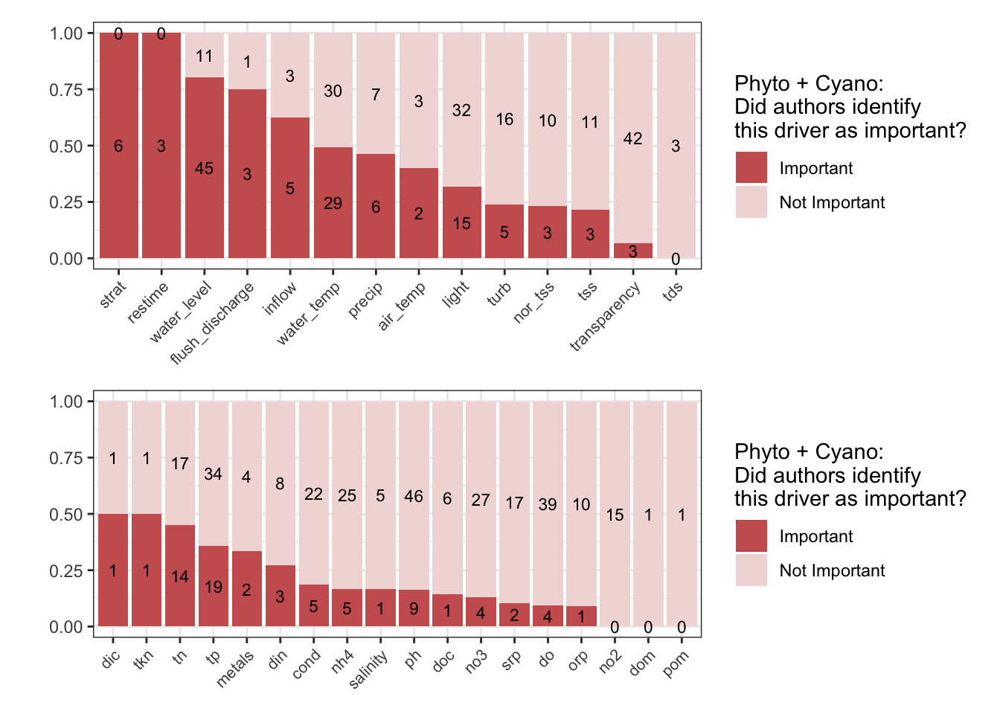
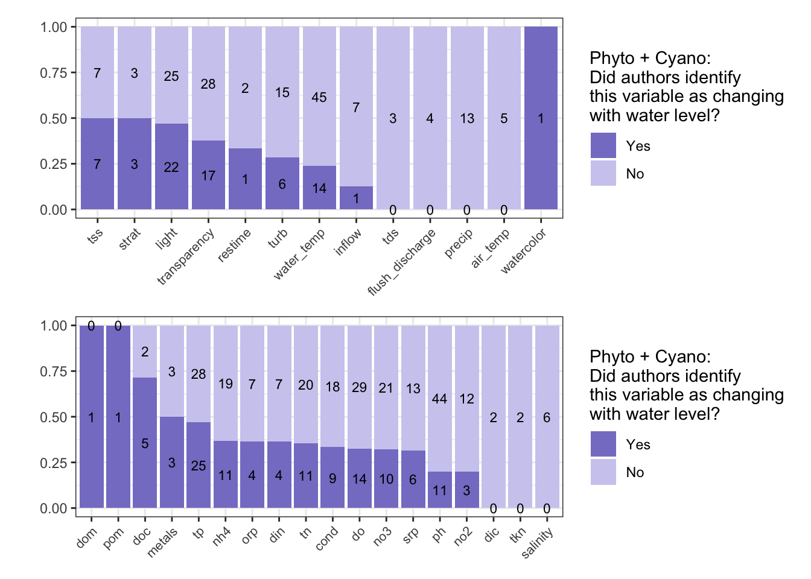
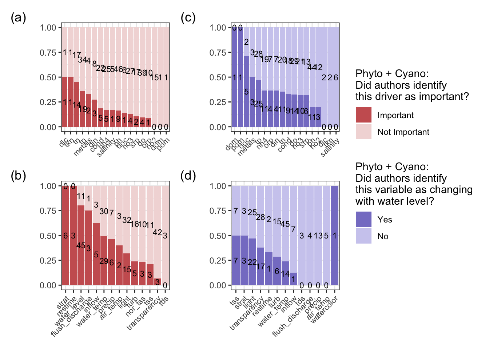
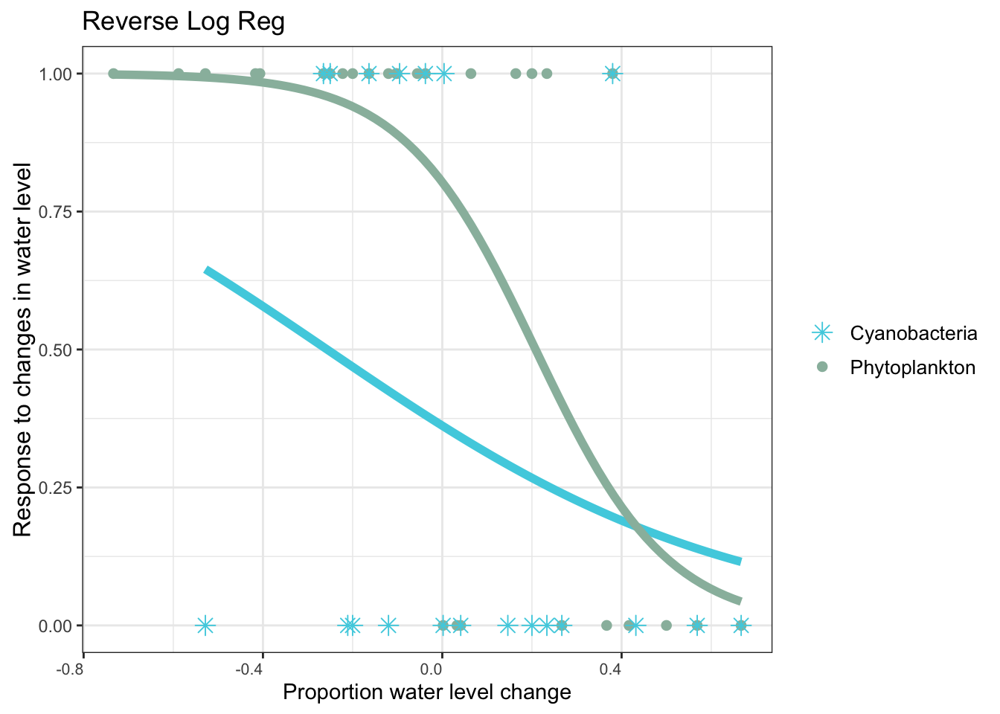
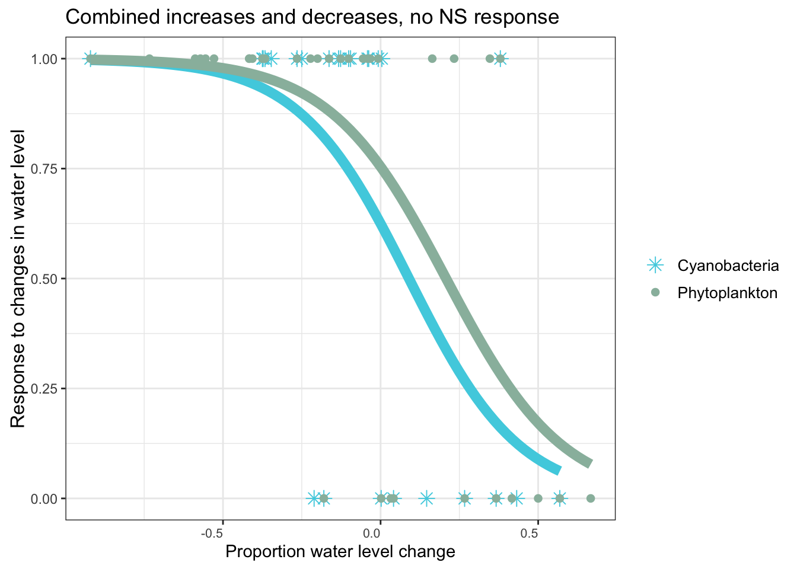
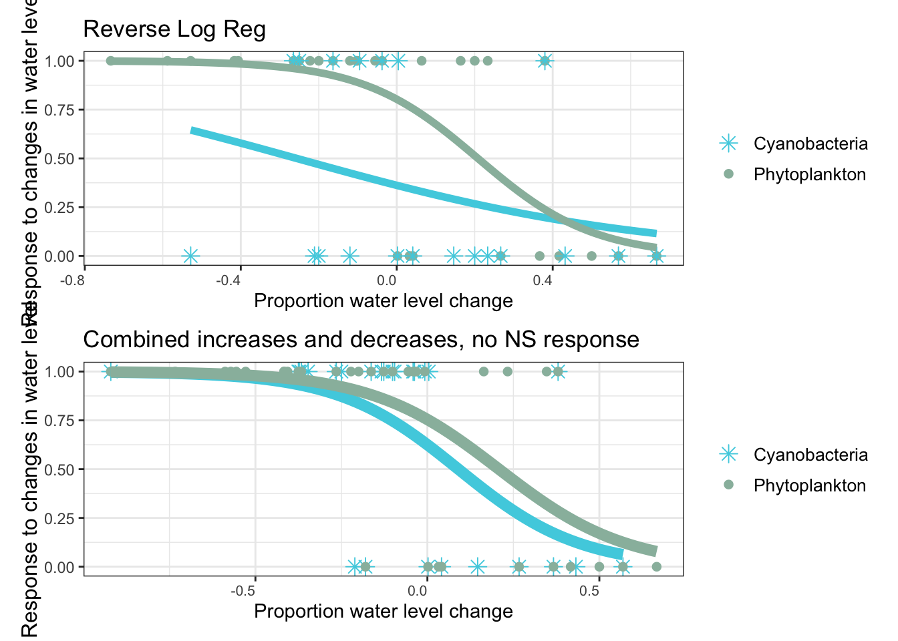

if (!requireNamespace("pacman", quietly = TRUE)) install.packages("pacman")
pacman::p_load(janitor, readr, tidyverse, ggplot2, dplyr, tidyr, naniar, plotly, patchwork, here, #plotting and data manipulation packages
rnaturalearth, rnaturalearthdata, mapview, sf, #mapping packages
rstatix, rfriend) #chi-square analysis packagesSysReview_phytoplankton-water-level-change
phyto-water-level-change-review
This markdown:
- reads in the extracted data from the systematic literature review.
- applies 1_qaqc_data_sysreview.R to exclude any sites that were erroneously extracted, to de-duplicate any sites/data that were included in this review in multiple studies, and to fix assorted typos and mistakes in the raw extracted data.
- applies 2_extract_drivers.R to create new columns for phytoplankton and cyanobacterial drivers, responses, and measured variables.
- applies 3_proportion_WL.R to calculate proportional change in water level for the logistic regression.
- creates all of the manuscript figures.
- creates all of the supplemental information (SI) figures.
Libraries
Install and load dependencies.
#read in and qaqc data
source(here::here("Scripts/1_qaqc_data_sysreview.R"))
results <- qaqc_data_sysreview("Data/sys_review_extracted_data_wUSGSnames.csv")Joining with `by = join_by(cov_num, name_yr, title, reviewer, email, notes,
num_res, num_water, aim, country, closest_usgs_name, latusgs_close,
longusgs_close, usgs_name, lat_usgs, long_usgs, res_name,
latitude_and_longitude_decimal_degrees, lat_dd, long_dd, depth_m,
fullpond_maxdepth, obs_maxdepth, meandepth, mindepth, volume_m_3,
fullpond_maxvol, obs_maxvol, minvol, surface_area_km_2, fullpond_sa, obs_sa,
trophic, trophic_status_descriptors, mean_tp, mean_chla, secchi, study_years,
consecutive, sample_months, sample_freq, seasons, sites_num, depth_type,
meas_wl, change_wl, max_increase_vol, max_decrease_vol, elev_increase_max,
elev_decrease_max, comments_wl_change, magnitude_of_water_level_change,
perc_vol_increase, perc_vol_decrease, perc_depth_increase, perc_depth_decrease,
comments_perc_change, phys_vars, chem_vars, bio_vars, wld_type, wli_type,
comments_wl_change_1, trophic_change, phys_response, chem_response, phys_drive,
chem_drive, decrease_phyto_response, decrease_cyano_response,
decrease_toxin_response, decrease_phytocomm_response, increase_phyto_response,
increase_cyano_response, increase_toxin_response, increase_phytocomm_response,
quant_response, chla_ug_l_low, chla_ug_l_normal, chla_ug_l_high, phytobio_low,
phytobio_normal, phytobio_high, cyano_low, cyano_normal, cyano_high, toxin_low,
toxin_normal, toxin_high, exemplary)`data <- results$data
excluded_papers <- results$excluded_papers
write.csv(data, file = here("Data/qaqc_sysreviewdata.csv"))Dataset summary statistics
#number of waterbodies
reservoirs <- data |> select(c(res_name)) |> unique()
countries <- data |> select(c(country)) |> unique()
studies <- data |> select(c(name_yr)) |> unique()
summary_counts <- tibble(
metric = c("reservoirs", "countries", "studies"),
value = c(
dplyr::n_distinct(data$res_name),
dplyr::n_distinct(data$country),
dplyr::n_distinct(data$name_yr)
)
)
summary_counts# A tibble: 3 × 2
metric value
<chr> <int>
1 reservoirs 62
2 countries 25
3 studies 58#there are a total of 3 TGRs, so there are 62-2 reservoirs, = 60 total lakes! + 2 Peipsi, but there are two different Boquierao, so 62 is still the correct number
#25 countries - combined Argentina/Uruguay, Estonia/Russia, one blank = 22 total countries
#60 studies, some duplicate authors but no duplicate studies.
both_measured <- data |>
select(res_name, increase_phyto_response, increase_cyano_response,
decrease_phyto_response, decrease_cyano_response) |>
mutate(across(
c(decrease_phyto_response, increase_phyto_response,
decrease_cyano_response, increase_cyano_response),
~ .x |>
trimws() |>
na_if("") |>
na_if("Not measured")
)) |>
mutate(test = ifelse(
((!is.na(decrease_phyto_response) | !is.na(increase_phyto_response)) &
(!is.na(decrease_cyano_response) | !is.na(increase_cyano_response))),
"Both", "one"
)) |>
filter(test == "Both")
result <- data %>%
# clean missing values
mutate(across(
c(decrease_phyto_response, decrease_cyano_response, phys_drive),
~ .x %>%
trimws() %>%
na_if("") %>%
na_if("Not measured")
)) %>%
filter(
grepl("decrease", decrease_phyto_response, ignore.case = TRUE) |
grepl("decrease", decrease_cyano_response, ignore.case = TRUE)
) |>
# flag whether drivers mention turbidity / TSS / low light
mutate(driver_flag = str_detect(
tolower(phys_drive),
"turbidity|total suspended solids|light"
)) %>%
select(decrease_phyto_response, increase_phyto_response, decrease_cyano_response, res_name, driver_flag, name_yr, phys_drive)Manuscript Figures
source(here::here("Scripts/2_extract_drivers.R"))
data_wdrivers <- extract_drivers(data) manuscript_figures <- here("Manuscript_figures/")
if(!file.exists(manuscript_figures)){
#make the folder
dir.create(file.path(manuscript_figures))
}Phyto and cyano drivers
phyto_only <- data_wdrivers |>
filter(increase_phyto_response != "" & increase_phyto_response != "Not measured" |
decrease_phyto_response != "" & decrease_phyto_response != "Not measured")
chem_phyto_only_drivers <- phyto_only |>
select(matches("^(cond|do|nh4|no2|no3|orp|ph|srp|tn|tp).*(?:_vars|_drive)$"), res_name, name_yr) |>
select(-c(res_name, name_yr, phys_vars, phys_drive, phyto_micros_vars, dom_vars, dom_drive))
chem_phyto_sums <- chem_phyto_only_drivers %>%
summarise(across(everything(), sum, na.rm = TRUE))Warning: There was 1 warning in `summarise()`.
ℹ In argument: `across(everything(), sum, na.rm = TRUE)`.
Caused by warning:
! The `...` argument of `across()` is deprecated as of dplyr 1.1.0.
Supply arguments directly to `.fns` through an anonymous function instead.
# Previously
across(a:b, mean, na.rm = TRUE)
# Now
across(a:b, \(x) mean(x, na.rm = TRUE))chem_phyto_long <- chem_phyto_sums %>%
pivot_longer(cols = everything(),
names_to = "variable_type",
values_to = "count") %>%
separate(variable_type, into = c("variable", "type"), sep = "_(?=[^_]+$)")
chemicalvars_phytos <- chem_phyto_long %>%
mutate(type = recode(type, vars = "meas")) %>%
pivot_wider(
names_from = type,
values_from = count) |>
rename(id = drive,
names = variable) |>
mutate(notid = meas - id,
prop_id = id / meas)
chem <- chemicalvars_phytos |>
select(names, notid, id, prop_id) |>
arrange(desc(prop_id)) |>
mutate(names = factor(names, levels = names)) |>
select(-prop_id) |>
pivot_longer(!names, names_to = "driver", values_to = "count") |>
ggplot(aes(fill = driver, y = count, x = names)) +
geom_bar(position = position_fill(reverse = TRUE), stat = "identity") +
geom_text(
aes(label = count),
position = position_fill(vjust = 0.5, reverse = TRUE),
color = "black",
size = 3) +
scale_fill_manual(
values = c("#99bbab", "#ddefcd"),
labels = c("Important", "Not Important"),
name = "Phytoplankton:\nDid authors identify\nthis driver as important?") +
# ggtitle("Chemical Variables") +
theme_bw() +
labs(y = "") +
theme(
axis.text.x = element_text(hjust = 1, size = 8, angle = 45),
axis.title.x = element_blank(),
axis.title.y = element_text(angle = 90, vjust = .5, size = 12))
phys_phyto_only_drivers <- phyto_only |>
select(matches("^(water|transparency|turb|light|tss).*(?:_vars|_drive)$"), res_name, name_yr) |> select(-c(res_name, name_yr)) |>
mutate(total_wl = ifelse(water_level_drive == 1 & water_level_vars == 0, 1, water_level_vars),
water_level_vars = total_wl) |>
select(-c(total_wl))
phys_phyto_sums <-phys_phyto_only_drivers %>%
summarise(across(everything(), sum, na.rm = TRUE))
phys_phyto_long <- phys_phyto_sums %>%
pivot_longer(cols = everything(),
names_to = "variable_type",
values_to = "count") %>%
separate(variable_type, into = c("variable", "type"), sep = "_(?=[^_]+$)")
physicalvars_phytos <- phys_phyto_long %>%
mutate(type = recode(type, vars = "meas")) %>%
pivot_wider(
names_from = type,
values_from = count) |>
rename(id = drive,
names = variable) |>
mutate(notid = meas - id,
prop_id = id / meas)
phys <- physicalvars_phytos |>
select(names, notid, id, prop_id) |>
arrange(desc(prop_id)) |>
mutate(names = factor(names, levels = names)) |>
select(-prop_id) |>
pivot_longer(!names, names_to = "driver", values_to = "count") |>
ggplot(aes(fill = driver, y = count, x = names)) +
geom_bar(position = position_fill(reverse = TRUE), stat = "identity") +
geom_text(
aes(label = count),
position = position_fill(vjust = 0.5, reverse = TRUE),
color = "black",
size = 3) +
scale_fill_manual(
values = c("#99bbab", "#ddefcd"),
labels = c("Important", "Not Important"),
name = "Phytoplankton:\nDid authors identify\nthis driver as important?") +
# ggtitle("Physical Variables") +
theme_bw() +
labs(y = "") +
theme(
axis.text.x = element_text(hjust = 1, size = 8, angle = 45),
axis.title.x = element_blank(),
axis.title.y = element_text(angle = 90, vjust = .5, size = 12))
phytos <- phys/chem
phytos
cyano_only <- data_wdrivers |>
filter(
increase_cyano_response != "" & increase_cyano_response != "Not measured" |
decrease_cyano_response != "" & decrease_cyano_response != "Not measured")
chem_cyano_only_drivers <- cyano_only |>
select(matches("^(cond|do|nh4|no2|no3|orp|ph|srp|tn|tp).*(?:_vars|_drive)$"), res_name, name_yr) |>
select(-c(res_name, name_yr, phys_vars, phys_drive, phyto_micros_vars, dom_vars, dom_drive))
chem_cyano_sums <- chem_cyano_only_drivers %>%
summarise(across(everything(), sum, na.rm = TRUE))
chem_cyano_long <- chem_cyano_sums %>%
pivot_longer(cols = everything(),
names_to = "variable_type",
values_to = "count") %>%
separate(variable_type, into = c("variable", "type"), sep = "_(?=[^_]+$)")
chemicalvars_cyanos <- chem_cyano_long %>%
mutate(type = recode(type, vars = "meas")) %>%
pivot_wider(
names_from = type,
values_from = count) |>
rename(id = drive,
names = variable) |>
mutate(notid = meas - id,
prop_id = id / meas)
chemvars_cyanos_drivers <- chemicalvars_cyanos |>
select(names, notid, id, prop_id) |>
arrange(desc(prop_id)) |>
mutate(names = factor(names, levels = names)) |>
select(-prop_id) |>
pivot_longer(!names, names_to = "driver", values_to = "count") |>
ggplot(aes(fill = driver, y = count, x = names)) +
geom_bar(position = position_fill(reverse = TRUE), stat = "identity") +
geom_text(
aes(label = count),
position = position_fill(vjust = 0.5, reverse = TRUE),
color = "black",
size = 3
) +
scale_fill_manual(
values = c("#4dd0e1","#b2ebf2"),
labels = c("Important", "Not Important"),
name = "Cyanobacteria:\nDid authors identify\nthis driver as important?"
) +
# ggtitle("Chemical Variables") +
theme_bw() +
labs(y = "") +
theme(
axis.text.x = element_text(hjust = 1, size = 8, angle = 45),
axis.title.x = element_blank(),
axis.title.y = element_text(angle = 90, vjust = .5, size = 12)
)
phys_cyano_only_drivers <- cyano_only |>
select(matches("^(water|transparency|turb|light|tss).*(?:_vars|_drive)$"), res_name, name_yr) |> select(-c(res_name, name_yr)) |>
mutate(total_wl = ifelse(water_level_drive == 1 & water_level_vars == 0, 1, water_level_vars),
water_level_vars = total_wl) |>
select(-c(total_wl))
phys_cyano_sums <-phys_cyano_only_drivers %>%
summarise(across(everything(), sum, na.rm = TRUE))
phys_cyano_long <- phys_cyano_sums %>%
pivot_longer(cols = everything(),
names_to = "variable_type",
values_to = "count") %>%
separate(variable_type, into = c("variable", "type"), sep = "_(?=[^_]+$)")
physicalvars_cyanos <- phys_cyano_long %>%
mutate(type = recode(type, vars = "meas")) %>%
pivot_wider(
names_from = type,
values_from = count) |>
rename(id = drive,
names = variable) |>
mutate(notid = meas - id,
prop_id = id / meas)
physvars_cyanos_drivers <- physicalvars_cyanos |>
select(names, notid, id, prop_id) |>
arrange(desc(prop_id)) |>
mutate(names = factor(names, levels = names)) |>
select(-prop_id) |>
pivot_longer(!names, names_to = "driver", values_to = "count") |>
ggplot(aes(fill = driver, y = count, x = names)) +
geom_bar(position = position_fill(reverse = TRUE), stat = "identity") +
geom_text(
aes(label = count),
position = position_fill(vjust = 0.5, reverse = TRUE),
color = "black",
size = 3
) +
scale_fill_manual(
values = c("#4dd0e1","#b2ebf2"),
labels = c("Important", "Not Important"),
name = "Cyanobacteria:\nDid authors identify\nthis driver as important?"
) +
# ggtitle("Physical Variables") +
theme_bw() +
labs(y = "") +
theme(
axis.text.x = element_text(hjust = 1, size = 8, angle = 45),
axis.title.x = element_blank(),
axis.title.y = element_text(angle = 90, vjust = .5, size = 12)
)
cyanos <- physvars_cyanos_drivers/chemvars_cyanos_drivers
cyanos
chem <- chem + theme(plot.margin = margin(t = 5, r = 5, b = 25, l = 5))
combined <- (physvars_cyanos_drivers/chemvars_cyanos_drivers) | (phys / chem)
combined <- ((phys/physvars_cyanos_drivers) | (chem/chemvars_cyanos_drivers)) +
plot_annotation(tag_levels = "a", tag_suffix = ")", tag_prefix = "(")+
plot_layout(guides = "collect", heights = c(1, 1)) &
theme(
legend.position = "right",
legend.box = "vertical",
plot.tag = element_text(size = 10)
)
combined
ggsave(paste0(here(),"/Manuscript_figures/drivers_cyanophyto.jpg"), plot = combined, height = 4, width = 7.5, units = "in")Map
Make map figure.
na_strings <- c("NA", "N A", "N / A", "N/A", "N/ A", "Not Available", "NOt available", "", "not reported")
latlong <- data %>%
mutate(
study_years = ifelse(
grepl("36 \\(satellite data\\); 12 \\(field data\\)", study_years),"12",
ifelse(grepl("36 \\(satellite data\\); 2 \\(field data\\)", study_years),"2",study_years)),
study_years = as.numeric(study_years)) |>
mutate(depth_m = ifelse(!is.na(fullpond_maxdepth), fullpond_maxdepth, obs_maxdepth),
depth_m = as.numeric(depth_m),
years_studied = ifelse(study_years == 1, "1",
ifelse(study_years >1 & study_years <=5, "2-5",
ifelse(study_years >5 & study_years <= 10, "6-10",
ifelse(study_years > 10, "more than 10", NA)))),
years_studied = factor(years_studied, levels = c("1", "2-5", "6-10", "more than 10"))) |>
select("lat_dd", "long_dd", "res_name", "decrease_phyto_response", "increase_phyto_response", "decrease_cyano_response", "increase_cyano_response", "depth_m", "trophic_status_reduced", "years_studied") |>
mutate(lat_dd = ifelse(lat_dd == 103.466667 & res_name == "Zipingpu Reservoir", 30.983333, lat_dd),
long_dd = ifelse(long_dd == 30.983333 & res_name == "Zipingpu Reservoir", 103.466667, long_dd)) |>
mutate(long_dd = ifelse(long_dd == 6.77888889 & res_name == "Serra Serrada", -6.77888889, long_dd)) |>
# mutate(lat_dd = ifelse(res_name == "Kuibyshev Reservoir", 53.462857, lat_dd),
# long_dd = ifelse(res_name == "Kuibyshev Reservoir", 49.156064, long_dd)) |>
replace_with_na_all(condition = ~.x %in% na_strings) |>
subset(!is.na(long_dd)) |>
subset(!is.na(lat_dd)) |>
mutate(increase_phyto_response = ifelse(increase_phyto_response == "Not measured"|increase_phyto_response == ""|(grepl("Other", increase_phyto_response)), NA, increase_phyto_response)) |>
mutate(decrease_phyto_response = ifelse(decrease_phyto_response == "Not measured"|decrease_phyto_response == ""|(grepl("Other", decrease_phyto_response)), NA, decrease_phyto_response)) |>
mutate(increase_cyano_response = ifelse(increase_cyano_response == "Not measured"|increase_cyano_response == ""|(grepl("Other", increase_cyano_response)), NA, increase_cyano_response)) |>
mutate(decrease_cyano_response = ifelse(decrease_cyano_response == "Not measured"|decrease_cyano_response == ""|(grepl("Other", decrease_cyano_response)), NA, decrease_cyano_response)) |>
filter(!(is.na(decrease_phyto_response) & is.na(increase_phyto_response) & is.na(decrease_cyano_response) & is.na(increase_cyano_response))) %>%
mutate(increase_decrease_mosaic = ifelse(((!is.na(decrease_phyto_response) | !is.na(decrease_cyano_response)) & (!is.na(increase_phyto_response) | !is.na(increase_cyano_response))),"Both",
ifelse((!is.na(decrease_phyto_response) | !is.na(decrease_cyano_response)),"Decrease",
ifelse((!is.na(increase_phyto_response) | !is.na(increase_cyano_response)),"Increase", NA))))
world <- ne_countries(scale = "medium", returnclass = "sf")
#world <- map_data("world")
litdata_map <- latlong %>%
mutate(decrease_phyto_response = ifelse(decrease_phyto_response == "Not measured", NA, decrease_phyto_response),
increase_phyto_response = ifelse(increase_phyto_response == "Not measured", NA, increase_phyto_response),
decrease_cyano_response = ifelse(decrease_cyano_response == "Not measured", NA, decrease_cyano_response),
increase_cyano_response = ifelse(increase_cyano_response == "Not measured", NA, increase_cyano_response)) |>
mutate(mapvals = ifelse(((!is.na(decrease_phyto_response)|!is.na(increase_phyto_response)) & (!is.na(decrease_cyano_response)|!is.na(increase_cyano_response))), "Both",
ifelse(!is.na(decrease_phyto_response)|!is.na(increase_phyto_response), "Phytoplankton",
ifelse(!is.na(decrease_cyano_response)|!is.na(increase_cyano_response), "Cyanobacteria", NA))))
litdata_map_sf <- st_as_sf(litdata_map,
coords = c("long_dd", "lat_dd"),
crs = 4326,
remove = FALSE)
sitemap_trophic <- ggplot(world) +
geom_sf(data = world, fill = "white") +
geom_sf(data = litdata_map_sf, size = 1.2, alpha = 0.7,
aes(color = as.factor(increase_decrease_mosaic))) +
scale_color_manual(values = c("#7A5FA8", "#C65A6A", "#79B8DE"),
name = "Does water level increase or decrease?") +
coord_sf(expand = FALSE) +
scale_x_continuous(breaks = seq(-180, 180, by = 60),
labels = function(x) paste0(abs(x), "°", ifelse(x < 0, "W", ifelse(x > 0, "E", "")))) +
scale_y_continuous(breaks = seq(-90, 90, by = 30),
labels = function(y) paste0(abs(y), "°", ifelse(y < 0, "S", ifelse(y > 0, "N", "")))) +
theme_minimal(base_size = 10) + # sets all text to 10pt baseline
guides(colour = guide_legend(
direction = "vertical",
title.position = "top",
title.hjust = 0.5,
nrow = 1,
byrow = T,
override.aes = list(size = 3))) +
theme(legend.text = element_text(size = 8),
legend.title = element_text(size = 10),
legend.position = "top",
axis.text = element_text(size = 8),
axis.title = element_blank(),
panel.grid.major = element_line(color = "grey90", linewidth = 0.3),
legend.key.size = unit(0.4, "cm"))
sitemap_trophic
ggsave(paste0(here(), "/Manuscript_figures/sitemap.jpg"),
plot = sitemap_trophic,
height = 3,
width = 3.5,
units = "in",
dpi = 1200
)
# ggsave(paste0(here(),"/Manuscript_figures/sitemap.jpg"), plot = sitemap_trophic, height = 3, width = 3.5, units = "in")The next chunk sources the function used to derive proportional water-level metrics.
#uses propWL_logreg function found in proportion_WL.R
source(here::here("Scripts/3_proportion_WL.R"))
boxplotdata2 <- propWL_logreg(data)Set up logistic regression for effect of water level change on phytoplankton and cyanobacteria communities
We ran the logistic regression three ways. In the manuscript, the logistic regression includes both water level increases and decreases. We also prioritized only water level increases (any lake that had both a water level increase and decrease was kept as only an increase) and subsequently prioritized only water level decreases (any lake that had both a water level increase and decrease was kept as only a decrease)
phytoincrease_logreg <- boxplotdata2 |>
dplyr::select(prop_alldelta_wl_decrease, prop_1delta_wl_increase, phyto_binary_increase, phyto_binary_decrease, phyto_response_wl_up, phyto_response_wl_down, name_yr, trophic_status_reduced, prop_alldelta_wl_increase, res_name) |>
mutate(phyto_binary_decrease = NA,
prop_alldelta_wl_decrease = NA,
prop_deltawl = prop_alldelta_wl_increase,
response_binary = phyto_binary_increase,
deltawl_type = "increase") |>
filter(!is.na(phyto_response_wl_up)) |>
filter(!is.na(prop_alldelta_wl_increase)) |>
select(deltawl_type, prop_alldelta_wl_increase, prop_alldelta_wl_decrease, phyto_binary_decrease, phyto_binary_increase, name_yr, trophic_status_reduced, prop_deltawl, response_binary, res_name)
phytodecrease_logreg <- boxplotdata2 |>
dplyr::select(prop_alldelta_wl_decrease, prop_1delta_wl_increase, phyto_binary_increase, phyto_binary_decrease, phyto_response_wl_up, phyto_response_wl_down, name_yr, trophic_status_reduced, prop_alldelta_wl_increase, res_name) |>
mutate(phyto_binary_increase = NA,
prop_alldelta_wl_increase = NA,
prop_deltawl = prop_alldelta_wl_decrease,
response_binary = phyto_binary_decrease,
deltawl_type = "decrease") |>
filter(!is.na(phyto_response_wl_down)) |>
filter(!is.na(prop_alldelta_wl_decrease)) |>
select(deltawl_type, prop_alldelta_wl_increase, prop_alldelta_wl_decrease, phyto_binary_decrease, phyto_binary_increase, name_yr, trophic_status_reduced, prop_deltawl, response_binary, res_name)
phyto_logreg <- rbind(phytodecrease_logreg, phytoincrease_logreg)
phyto_logreg <- phyto_logreg |>
mutate(type = "phyto") |>
select(name_yr, res_name, trophic_status_reduced, prop_deltawl, response_binary, type)
cyanoincrease_logreg <- boxplotdata2 |>
dplyr::select(prop_alldelta_wl_decrease, cyano_binary_increase, cyano_binary_decrease, cyano_response_wl_up, cyano_response_wl_down, name_yr, trophic_status_reduced, prop_alldelta_wl_increase, res_name) |>
mutate(cyano_binary_decrease = NA,
prop_alldelta_wl_decrease = NA,
prop_deltawl = prop_alldelta_wl_increase,
response_binary = cyano_binary_increase,
deltawl_type = "increase") |>
filter(!is.na(cyano_response_wl_up)) |>
filter(!is.na(prop_alldelta_wl_increase)) |>
select(deltawl_type, prop_alldelta_wl_increase, prop_alldelta_wl_decrease, cyano_binary_decrease, cyano_binary_increase, name_yr, trophic_status_reduced, prop_deltawl, response_binary, res_name)
cyanodecrease_logreg <- boxplotdata2 |>
dplyr::select(prop_alldelta_wl_decrease, cyano_binary_increase, cyano_binary_decrease, cyano_response_wl_up, cyano_response_wl_down, name_yr, trophic_status_reduced, prop_alldelta_wl_increase, res_name) |>
mutate(cyano_binary_increase = NA,
prop_alldelta_wl_increase = NA,
prop_deltawl = prop_alldelta_wl_decrease,
response_binary = cyano_binary_decrease,
deltawl_type = "decrease") |>
filter(!is.na(cyano_response_wl_down)) |>
filter(!is.na(prop_alldelta_wl_decrease)) |>
select(deltawl_type, prop_alldelta_wl_increase, prop_alldelta_wl_decrease, cyano_binary_decrease, cyano_binary_increase, name_yr, trophic_status_reduced, prop_deltawl, response_binary, res_name)
cyano_logreg <- rbind(cyanodecrease_logreg, cyanoincrease_logreg)
cyano_logreg <- cyano_logreg |>
mutate(type = "cyano") |>
select(name_yr, res_name, trophic_status_reduced, prop_deltawl, response_binary, type)
all_logreg <- rbind(phyto_logreg, cyano_logreg)
logregform_phyto <- glm(formula=response_binary ~ prop_deltawl, data=phyto_logreg, family=binomial)
summary(logregform_phyto)
Call:
glm(formula = response_binary ~ prop_deltawl, family = binomial,
data = phyto_logreg)
Coefficients:
Estimate Std. Error z value Pr(>|z|)
(Intercept) 0.02252 0.35017 0.064 0.94873
prop_deltawl -3.93679 1.34011 -2.938 0.00331 **
---
Signif. codes: 0 '***' 0.001 '**' 0.01 '*' 0.05 '.' 0.1 ' ' 1
(Dispersion parameter for binomial family taken to be 1)
Null deviance: 64.109 on 46 degrees of freedom
Residual deviance: 51.072 on 45 degrees of freedom
(1 observation deleted due to missingness)
AIC: 55.072
Number of Fisher Scoring iterations: 4logregform_cyano <- glm(formula=response_binary ~ prop_deltawl, data=cyano_logreg, family=binomial)
summary(logregform_cyano)
Call:
glm(formula = response_binary ~ prop_deltawl, family = binomial,
data = cyano_logreg)
Coefficients:
Estimate Std. Error z value Pr(>|z|)
(Intercept) -0.1885 0.3854 -0.489 0.6248
prop_deltawl -2.8902 1.3978 -2.068 0.0387 *
---
Signif. codes: 0 '***' 0.001 '**' 0.01 '*' 0.05 '.' 0.1 ' ' 1
(Dispersion parameter for binomial family taken to be 1)
Null deviance: 47.134 on 33 degrees of freedom
Residual deviance: 41.523 on 32 degrees of freedom
(1 observation deleted due to missingness)
AIC: 45.523
Number of Fisher Scoring iterations: 3library(broom)
extract_summary <- function(model, data, model_name) {
tidied <- broom::tidy(model)
pval <- tidied$p.value[tidied$term == "prop_deltawl"]
data_size <- nrow(data)
tibble(
model = model_name,
n = data_size,
pval = pval
)
}
summary_tbl <- dplyr::bind_rows(
extract_summary(logregform_phyto, phyto_logreg, "logregform_phyto"),
extract_summary(logregform_cyano, cyano_logreg, "logregform_cyano")
)
summary_tbl# A tibble: 2 × 3
model n pval
<chr> <int> <dbl>
1 logregform_phyto 48 0.00331
2 logregform_cyano 35 0.0387 Plot logistic regression with combined water level increase/decrease
This chunk will generate logistic regression plots for both phytoplankton and cyanobacteria.
all <- all_logreg %>%
ggplot(aes(x = prop_deltawl, y = response_binary,
color = as.factor(type),
shape = as.factor(type))) +
scale_color_manual(
values = c("#4dd0e1", "#99bbab"),
name = "Type",
labels = c("Cyanobacteria", "Phytoplankton")) +
scale_shape_manual(
values = c(8, 20),
name = "Type",
labels = c("Cyanobacteria", "Phytoplankton")) +
#scale_color_discrete(labels = c("Cyanobacteria", "Phytoplankton"))+
geom_point(size = 3) +
geom_smooth(method = "glm",
method.args = list(family = "binomial"),
se = FALSE,
linewidth = 2) +
ylab("Response to changes \nin water level") +
xlab("Proportion water level change") +
#ggtitle("Combined increases and decreases") +
theme_bw() +
guides(
color = guide_legend(override.aes = list(linetype = 0)),
shape = guide_legend(override.aes = list(linetype = 0))) +
theme(
axis.text.x = element_text(hjust = 1, size = 8),
axis.title.y = element_text(angle = 90, vjust = .5, size = 10),
axis.title.x = element_text(size = 10),
legend.position = "bottom",
legend.title = element_blank(),
legend.text = element_text(size = 10))
all`geom_smooth()` using formula = 'y ~ x'Warning: Removed 2 rows containing non-finite outside the scale range
(`stat_smooth()`).Warning: Duplicated `override.aes` is ignored.Warning: Removed 2 rows containing missing values or values outside the scale range
(`geom_point()`).
ggsave(paste0(here(),"/Manuscript_figures/logreg.jpg"), plot = all, height = 3, width = 7, units = "in")`geom_smooth()` using formula = 'y ~ x'Warning: Removed 2 rows containing non-finite outside the scale range
(`stat_smooth()`).Warning: Duplicated `override.aes` is ignored.Warning: Removed 2 rows containing missing values or values outside the scale range
(`geom_point()`).Set up and run Chi-squared tests
These Chi-square tests assess the effect of increases and decreases in water level on phytoplankton and cyanobacteria (do they experience an increase, a decrease, or no change?).
tab <- tab_cyano_down
extract_chi_summary <- function(tab, model_name) {
chi <- suppressWarnings(stats::chisq.test(tab))
fisher_p <- tryCatch(
stats::fisher.test(tab)$p.value,
error = function(e) NA)
tibble::tibble(
model = model_name,
n = sum(tab),
chisq_stat = unname(chi$statistic),
chisq_p = signif(chi$p.value, 3),
fisher_p = signif(fisher_p, 3))
}
summary_tbl_x2 <- dplyr::bind_rows(
extract_chi_summary(tab_cyano_all, "cyano_all"),
extract_chi_summary(tab_cyano_down, "cyano_down"),
extract_chi_summary(tab_cyano_up, "cyano_up"),
extract_chi_summary(tab_phyto_all, "phyto_all"),
extract_chi_summary(tab_phyto_decrease, "phyto_decrease"),
extract_chi_summary(phyto_increase_chi, "phyto_increase"))
summary_tbl_x2# A tibble: 6 × 5
model n chisq_stat chisq_p fisher_p
<chr> <int> <dbl> <dbl> <dbl>
1 cyano_all 68 29.4 0.00000185 1.42e- 7
2 cyano_down 44 6.75 0.0802 1.05e- 1
3 cyano_up 44 22.9 0.0000427 7.14e- 6
4 phyto_all 92 44.2 0.00000000137 2.44e-11
5 phyto_decrease 59 8.23 0.0416 4.46e- 2
6 phyto_increase 59 28.2 0.00000331 1.11e- 7model_name = "cyano_all"
tab = tab_cyano_all
extract_cellwise_posthoc <- function(tab, model_name, p.adjust.method = "bonferroni") {
# run global chi-square with descriptors
chi_res <- tab %>%
chisq_test() %>%
chisq_descriptives() %>%
#std_residuals() %>% # standardized residuals
dplyr::select(water_direction_final, response_final, observed, expected, std.resid)
# compute two‑sided p value from standardized residuals
chi_res <- chi_res %>%
mutate(p_raw = 2 * (1 - pnorm(abs(std.resid))))
# multiple test correction
chi_res <- chi_res %>%
mutate(p_adj = p.adjust(p_raw, method = "bonferroni"),
model = model_name)
return(chi_res)
}
#create a summary table with all stats for Supplemental Table XX
summary_tbl <- dplyr::bind_rows(
extract_cellwise_posthoc(tab_cyano_all, "cyano_all"),
extract_cellwise_posthoc(tab_cyano_down, "cyano_down"),
extract_cellwise_posthoc(tab_cyano_up, "cyano_up"),
extract_cellwise_posthoc(tab_phyto_all, "phyto_all"),
extract_cellwise_posthoc(tab_phyto_decrease, "phyto_decrease"),
extract_cellwise_posthoc(phyto_increase_chi, "phyto_increase")) Warning in stats::chisq.test(x, y, correct = correct, p = p, rescale.p =
rescale.p, : Chi-squared approximation may be incorrect
Warning in stats::chisq.test(x, y, correct = correct, p = p, rescale.p =
rescale.p, : Chi-squared approximation may be incorrect
Warning in stats::chisq.test(x, y, correct = correct, p = p, rescale.p =
rescale.p, : Chi-squared approximation may be incorrect
Warning in stats::chisq.test(x, y, correct = correct, p = p, rescale.p =
rescale.p, : Chi-squared approximation may be incorrect
Warning in stats::chisq.test(x, y, correct = correct, p = p, rescale.p =
rescale.p, : Chi-squared approximation may be incorrect
Warning in stats::chisq.test(x, y, correct = correct, p = p, rescale.p =
rescale.p, : Chi-squared approximation may be incorrectsummary_tbl_posthoc <- summary_tbl |>
mutate(significant = ifelse(p_adj < 0.05, "Significant", NA))
summary_tbl_posthoc# A tibble: 48 × 9
water_direction_final response_final observed expected std.resid p_raw
<fct> <fct> <int> <dbl> <dbl> <dbl>
1 cyano_response_wl_down "Decrease" 3 11.8 -4.74 2.14e-6
2 cyano_response_wl_up "Decrease" 17 8.24 4.74 2.14e-6
3 cyano_response_wl_down "Increase" 25 15.9 4.59 4.40e-6
4 cyano_response_wl_up "Increase" 2 11.1 -4.59 4.40e-6
5 cyano_response_wl_down "Notsignificant" 11 11.8 -0.414 6.79e-1
6 cyano_response_wl_up "Notsignificant" 9 8.24 0.414 6.79e-1
7 cyano_response_wl_down "Shiftto\nCyanoba… 1 0.588 0.843 3.99e-1
8 cyano_response_wl_up "Shiftto\nCyanoba… 0 0.412 -0.843 3.99e-1
9 wl_down "Decrease" 3 4.55 -2.55 1.07e-2
10 wl_up "Decrease" 2 0.455 2.55 1.07e-2
# ℹ 38 more rows
# ℹ 3 more variables: p_adj <dbl>, model <chr>, significant <chr>Chi-squared test plots
library(dplyr)
tab_cyano_all <- as.data.frame(tab_cyano_all) |>
filter(!grepl("Shift", response_final))
cyano_chi <- ggplot(tab_cyano_all, aes(x = water_direction_final, y = Freq, fill = response_final)) +
geom_bar(stat = "identity", position = "fill") +
geom_text(aes(label = Freq),
position = position_fill(vjust = 0.5),
color = "black",
size = 4) +
labs(x = "",
y = "Proportion",
fill = "Response") + #,
# title = "Cyanobacteria Response by Water Level Direction") +
scale_x_discrete(labels = c(
"cyano_response_wl_up" = "Water level increase",
"cyano_response_wl_down" = "Water level decrease"))+
scale_fill_manual(
values = c("#b2ebf2", "#4dd0e1", "#e0e0e0"), # 3 colors
name = "Did cyanobacteria\nincrease or decrease?",
labels = c("Decrease", "Increase", "No Change")) +
theme_bw() +
theme(axis.text.x = element_text(hjust = 0.5, size = 10, color = "black"),
#axis.text.x = element_blank(),
axis.text.y = element_text(hjust = 1, size = 10, color = "black"),
axis.title.y=element_text(angle=90, vjust = 0.5, size = 10),
axis.title.x=element_text(vjust = 1, size = 10),
#legend.text = element_blank(),
legend.title=element_text(size = 10),
legend.key.height = unit(.75, 'cm'),
legend.key.width = unit(.75, 'cm'))
df_plot_phyto <- as.data.frame(tab_phyto_all) |>
filter(!grepl("Shift", response_final))
phyto_chi <- ggplot(df_plot_phyto, aes(x = water_direction_final, y = Freq, fill = response_final)) +
geom_bar(stat = "identity", position = "fill") +
geom_text(aes(label = Freq),
position = position_fill(vjust = 0.5),
color = "black",
size = 4) +
labs(x = "",
y = "Proportion",
fill = "Response") +#,
# title = "Phytoplankton Response by Water Level Direction") +
scale_x_discrete(labels = c(
"phyto_response_wl_up" = "Water level increase",
"phyto_response_wl_down" = "Water level decrease"))+
scale_fill_manual(values = c("#ddefcd", "#99bbab", "#e0e0e0"),
name = "Did phytoplankton\nincrease or decrease?",
labels = c("Decrease", "Increase", "No Change")) +
theme_bw() +
theme(axis.text.x = element_text(hjust = 0.5, size = 10, color = "black"),
#axis.text.x = element_blank(),
axis.text.y = element_text(hjust = 1, size = 10, color = "black"),
axis.title.y=element_text(angle=90, vjust = 0.5, size = 10),
axis.title.x=element_text(vjust = 1, size = 10),
#legend.text = element_blank(),
legend.title=element_text(size = 10),
legend.key.height = unit(.75, 'cm'),
legend.key.width = unit(.75, 'cm'))
chi <- phyto_chi / cyano_chi +
#+ plot_annotation(title = "Chi-Square") +
plot_annotation(tag_levels = "a", tag_suffix = ")", tag_prefix = "(")#+
#plot_layout(axes = "collect")
chi
ggsave(paste0(here(), "/Manuscript_figures/chi.jpg"), plot = chi, height = 4, width = 7, units = "in")Supplemental figures
supplement_figures <- here("Supplement_figures/")
if(!file.exists(supplement_figures)){
#make the folder
dir.create(file.path(supplement_figures))
}Trophic Levels
non_dups <- data |> select(name_yr, res_name, trophic_status_reduced) |>
unique()
#plot only reduced trophic state levels and only reservoirs that are not duplicated
trophic <- non_dups |>
filter(trophic_status_reduced != "not reported") |>
ggplot(aes(x= factor(trophic_status_reduced, c("oligotrophic", "mesotrophic", "eutrophic", "hypereutrophic")))) +
geom_bar(fill = "#9DBFC0") +
xlab("Trophic status") +
ylab("Number of lakes") +
theme_bw() +
#theme(axis.text.x = element_text(angle = 45, vjust = 0.5, hjust=1))+
theme(axis.text.x = element_text(size = 10))+
geom_text(aes(label = ..count..), stat = "count", vjust = 1.1, size = 4, colour = "black")
trophicWarning: The dot-dot notation (`..count..`) was deprecated in ggplot2 3.4.0.
ℹ Please use `after_stat(count)` instead.
# ggsave(paste0(here(),"/Supplement_figures/trophic.jpg"), plot = trophic, height = 3, width = 7, units = "in")unique(latlong$years_studied)[1] 6-10 1 more than 10 2-5
Levels: 1 2-5 6-10 more than 10years_studied <- latlong |>
# filter(years_studied != NA) |>
ggplot(aes(x= factor(years_studied, c("1", "2-5", "6-10", "more than 10")))) +
geom_bar(fill = "#DADABB") +
xlab("Number of years studied") +
ylab("Number of lakes") +
theme_bw() +
#theme(axis.text.x = element_text(angle = 45, vjust = 0.5, hjust=1))+
theme(axis.text.x = element_text(size = 10))+
geom_text(aes(label = ..count..), stat = "count", vjust = 1.1, size = 4, colour = "black")
years_studied
trophic_years <- trophic/years_studied + plot_annotation(tag_levels = "a", tag_suffix = ")", tag_prefix = "(")
# ggsave(paste0(here(),"/Supplement_figures/trophic_years.jpg"), plot = trophic_years, height = 5, width = 7, units = "in")Logistic regression prioritizing increases in water level
Logistic regression figures that prioritize either increases or decreases in water level, rather than both as plotted above.
cyanodecreasedata <- boxplotdata2 %>%
select(prop_alldelta_wl_decrease, prop_alldelta_wl_increase, prop_delta_wl_priorityincrease, combined_cyano_response_increasepriority, combined_cyano_response_binary_increasepriority, name_yr) %>%
filter(!is.na(prop_delta_wl_priorityincrease)) %>%
filter(!is.na(combined_cyano_response_binary_increasepriority)) %>%
filter(prop_alldelta_wl_decrease<0) %>%
rename(response_binaryincrease = combined_cyano_response_binary_increasepriority,
response_increase = combined_cyano_response_increasepriority) %>%
mutate(type = "cyano")
cyanoincreasedata <- boxplotdata2 %>%
select(prop_alldelta_wl_decrease, prop_alldelta_wl_increase, prop_delta_wl_priorityincrease, combined_cyano_response_increasepriority, combined_cyano_response_binary_increasepriority, name_yr) %>%
filter(!is.na(prop_delta_wl_priorityincrease)) %>%
filter(!is.na(combined_cyano_response_binary_increasepriority)) %>%
filter(prop_alldelta_wl_increase>0) %>%
rename(response_binaryincrease = combined_cyano_response_binary_increasepriority,
response_increase = combined_cyano_response_increasepriority) %>%
mutate(type = "cyano")
phytoincreasedata <- boxplotdata2 %>%
select(prop_alldelta_wl_decrease, prop_alldelta_wl_increase, prop_delta_wl_priorityincrease, combined_phyto_response_increasepriority, combined_phyto_response_binary_increasepriority, name_yr) %>%
filter(!is.na(prop_delta_wl_priorityincrease)) %>%
filter(!is.na(combined_phyto_response_binary_increasepriority)) %>%
filter(prop_alldelta_wl_increase>0) %>%
rename(response_binaryincrease = combined_phyto_response_binary_increasepriority,
response_increase = combined_phyto_response_increasepriority) %>%
mutate(type = "phyto")
phytodecreasedata <- boxplotdata2 %>%
select(prop_alldelta_wl_decrease, prop_alldelta_wl_increase, prop_delta_wl_priorityincrease, combined_phyto_response_increasepriority, combined_phyto_response_binary_increasepriority, name_yr) %>%
filter(!is.na(prop_delta_wl_priorityincrease)) %>%
filter(!is.na(combined_phyto_response_binary_increasepriority)) %>%
filter(prop_alldelta_wl_decrease<0) %>%
rename(response_binaryincrease = combined_phyto_response_binary_increasepriority,
response_increase = combined_phyto_response_increasepriority) %>%
mutate(type = "phyto")
cyanodata <- boxplotdata2 %>%
select(prop_delta_wl_priorityincrease, combined_cyano_response_increasepriority, combined_cyano_response_binary_increasepriority, name_yr, trophic_status_reduced) %>%
filter(!is.na(prop_delta_wl_priorityincrease)) %>%
filter(!is.na(combined_cyano_response_binary_increasepriority)) %>%
# filter(prop_delta_wl<0) %>%
rename(response_binary = combined_cyano_response_binary_increasepriority,
response = combined_cyano_response_increasepriority) %>%
mutate(type = "cyano") |>
mutate(wl_priority = "increase")
phytodata <- boxplotdata2 %>%
select(prop_delta_wl_priorityincrease, combined_phyto_response_increasepriority, combined_phyto_response_binary_increasepriority, name_yr, trophic_status_reduced) %>%
filter(!is.na(prop_delta_wl_priorityincrease)) %>%
filter(!is.na(combined_phyto_response_binary_increasepriority)) %>%
# filter(prop_delta_wl<0) %>%
rename(response_binary = combined_phyto_response_binary_increasepriority,
response = combined_phyto_response_increasepriority) %>%
mutate(type = "phyto")|>
mutate(wl_priority = "increase")
# logregdata <- rbind(cyanoincreasedata, cyanodecreasedata, phytoincreasedata, phytodecreasedata)
logregdata_increase <- rbind(cyanodata, phytodata)
#"#7A524B","#3C7F29","#8DBAE9"
logreg_wlincrease <- logregdata_increase %>% ggplot(aes(x = prop_delta_wl_priorityincrease, y = response_binary, color = as.factor(type), shape = as.factor(type))) +
scale_color_manual(
values = c("#4dd0e1", "#99bbab"),
name = "Type",
labels = c("Cyanobacteria", "Phytoplankton")) +
scale_shape_manual(
values = c(8, 20),
name = "Type",
labels = c("Cyanobacteria", "Phytoplankton")) +
geom_point(size = 3) +
geom_smooth(method = "glm",
method.args = list(family = "binomial"),
se = FALSE, linewidth = 3) +
#geom_jitter()+
ylab("Response to changes in water level") +
xlab("Proportion water level change") +
ggtitle("Prioritize water level increase") +
theme_bw() +
guides(
color = guide_legend(override.aes = list(linetype = 0)),
shape = guide_legend(override.aes = list(linetype = 0))) +
theme(axis.text.x = element_text(hjust = 1, size = 8),
axis.title.y=element_text(angle=90, vjust = .5, size = 12),
legend.title=element_blank(),
#legend.position = "bottom",
legend.text = element_text(size = 10))
logreg_wlincrease`geom_smooth()` using formula = 'y ~ x'Warning: Duplicated `override.aes` is ignored.
logregdata_phyto <- logregdata_increase %>% subset(type == "phyto")
logregdata_cyano <- logregdata_increase %>% subset(type == "cyano")
logregform_phyto <- glm(formula=response_binary ~ prop_delta_wl_priorityincrease, data=logregdata_phyto, family=binomial)
summary(logregform_phyto)
Call:
glm(formula = response_binary ~ prop_delta_wl_priorityincrease,
family = binomial, data = logregdata_phyto)
Coefficients:
Estimate Std. Error z value Pr(>|z|)
(Intercept) -0.06343 0.40377 -0.157 0.8752
prop_delta_wl_priorityincrease -3.43329 1.41820 -2.421 0.0155 *
---
Signif. codes: 0 '***' 0.001 '**' 0.01 '*' 0.05 '.' 0.1 ' ' 1
(Dispersion parameter for binomial family taken to be 1)
Null deviance: 44.361 on 31 degrees of freedom
Residual deviance: 36.369 on 30 degrees of freedom
AIC: 40.369
Number of Fisher Scoring iterations: 3logregform_cyano <- glm(formula=response_binary ~ prop_delta_wl_priorityincrease, data=logregdata_cyano, family=binomial)
summary(logregform_cyano)
Call:
glm(formula = response_binary ~ prop_delta_wl_priorityincrease,
family = binomial, data = logregdata_cyano)
Coefficients:
Estimate Std. Error z value Pr(>|z|)
(Intercept) -0.6157 0.4717 -1.305 0.192
prop_delta_wl_priorityincrease -2.8715 1.8169 -1.580 0.114
(Dispersion parameter for binomial family taken to be 1)
Null deviance: 29.720 on 22 degrees of freedom
Residual deviance: 26.653 on 21 degrees of freedom
AIC: 30.653
Number of Fisher Scoring iterations: 4# ggsave(paste0(here(),"/Supplement_figures/logreg_wlincrease.jpg"), plot = logreg_wlincrease, height = 3, width = 6.5, units = "in")Logistic regression prioritizing decreases in water level
cyanodecreasedata <- boxplotdata2 %>%
select(prop_alldelta_wl_decrease, prop_alldelta_wl_increase, prop_delta_wl_prioritydecrease, combined_cyano_response, combined_cyano_response_binary, name_yr) %>%
filter(!is.na(prop_delta_wl_prioritydecrease)) %>%
filter(!is.na(combined_cyano_response_binary)) %>%
filter(prop_alldelta_wl_decrease<0) %>%
rename(response_binary = combined_cyano_response_binary,
response = combined_cyano_response) %>%
mutate(type = "cyano")
cyanoincreasedata <- boxplotdata2 %>%
select(prop_alldelta_wl_decrease, prop_alldelta_wl_increase, prop_delta_wl_prioritydecrease, combined_cyano_response, combined_cyano_response_binary, name_yr) %>%
filter(!is.na(prop_delta_wl_prioritydecrease)) %>%
filter(!is.na(combined_cyano_response_binary)) %>%
filter(prop_alldelta_wl_increase>0) %>%
rename(response_binary = combined_cyano_response_binary,
response = combined_cyano_response) %>%
mutate(type = "cyano")
phytoincreasedata <- boxplotdata2 %>%
select(prop_alldelta_wl_decrease, prop_alldelta_wl_increase, prop_delta_wl_prioritydecrease, combined_phyto_response, combined_phyto_response_binary, name_yr) %>%
filter(!is.na(prop_delta_wl_prioritydecrease)) %>%
filter(!is.na(combined_phyto_response_binary)) %>%
filter(prop_alldelta_wl_increase>0) %>%
rename(response_binary = combined_phyto_response_binary,
response = combined_phyto_response) %>%
mutate(type = "phyto")
phytodecreasedata <- boxplotdata2 %>%
select(prop_alldelta_wl_decrease, prop_alldelta_wl_increase, prop_delta_wl_prioritydecrease, combined_phyto_response, combined_phyto_response_binary, name_yr) %>%
filter(!is.na(prop_delta_wl_prioritydecrease)) %>%
filter(!is.na(combined_phyto_response_binary)) %>%
filter(prop_alldelta_wl_decrease<0) %>%
rename(response_binary = combined_phyto_response_binary,
response = combined_phyto_response) %>%
mutate(type = "phyto")
cyanodata <- boxplotdata2 %>%
select(prop_delta_wl_prioritydecrease, combined_cyano_response, combined_cyano_response_binary, name_yr, trophic_status_reduced) %>%
filter(!is.na(prop_delta_wl_prioritydecrease)) %>%
filter(!is.na(combined_cyano_response_binary)) %>%
# filter(prop_delta_wl_prioritydecrease,<0) %>%
rename(response_binary = combined_cyano_response_binary,
response = combined_cyano_response) %>%
mutate(type = "cyano") |>
mutate(wl_priority = "decrease")
phytodata <- boxplotdata2 %>%
select(prop_delta_wl_prioritydecrease, combined_phyto_response, combined_phyto_response_binary, name_yr, trophic_status_reduced) %>%
filter(!is.na(prop_delta_wl_prioritydecrease)) %>%
filter(!is.na(combined_phyto_response_binary)) %>%
# filter(prop_delta_wl_prioritydecrease,<0) %>%
rename(response_binary = combined_phyto_response_binary,
response = combined_phyto_response) %>%
mutate(type = "phyto") |>
mutate(wl_priority = "decrease")
# logregdata <- rbind(cyanoincreasedata, cyanodecreasedata, phytoincreasedata, phytodecreasedata)
logregdata_decrease <- rbind(cyanodata, phytodata)
logregdata <- logregdata_decrease
#"#7A524B","#3C7F29","#8DBAE9"
logreg_wldecrease <- logregdata %>% ggplot(aes(x = prop_delta_wl_prioritydecrease, y = response_binary, color = as.factor(type), shape = as.factor(type))) +
scale_color_manual(
values = c("#4dd0e1", "#99bbab"),
name = "Type",
labels = c("Cyanobacteria", "Phytoplankton")) +
scale_shape_manual(
values = c(8, 20),
name = "Type",
labels = c("Cyanobacteria", "Phytoplankton")) +
geom_point(size = 3) +
geom_smooth(method = "glm",
method.args = list(family = "binomial"),
se = FALSE, linewidth = 3) +
#geom_jitter()+
ylab("Response to changes in water level") +
xlab("Proportion water level change") +
ggtitle("Prioritize water level decrease")+
theme_bw() +
guides(
color = guide_legend(override.aes = list(linetype = 0)),
shape = guide_legend(override.aes = list(linetype = 0))) +
theme(axis.text.x = element_text(hjust = 1, size = 8),
axis.title.y=element_text(angle=90, vjust = .5, size = 12),
legend.title=element_blank(),
#legend.position = "bottom",
legend.text = element_text(size = 10))
logreg_wldecrease`geom_smooth()` using formula = 'y ~ x'Warning: Duplicated `override.aes` is ignored.
logregdata_phyto <- logregdata %>% subset(type == "phyto")
logregdata_cyano <- logregdata %>% subset(type == "cyano")
logregform_phyto <- glm(formula=response_binary ~ prop_delta_wl_prioritydecrease, data=logregdata_phyto, family=binomial)
summary(logregform_phyto)
Call:
glm(formula = response_binary ~ prop_delta_wl_prioritydecrease,
family = binomial, data = logregdata_phyto)
Coefficients:
Estimate Std. Error z value Pr(>|z|)
(Intercept) -0.5409 0.6022 -0.898 0.3691
prop_delta_wl_prioritydecrease -7.3009 3.0565 -2.389 0.0169 *
---
Signif. codes: 0 '***' 0.001 '**' 0.01 '*' 0.05 '.' 0.1 ' ' 1
(Dispersion parameter for binomial family taken to be 1)
Null deviance: 42.806 on 33 degrees of freedom
Residual deviance: 31.737 on 32 degrees of freedom
AIC: 35.737
Number of Fisher Scoring iterations: 5logregform_cyano <- glm(formula=response_binary ~ prop_delta_wl_prioritydecrease, data=logregdata_cyano, family=binomial)
summary(logregform_cyano)
Call:
glm(formula = response_binary ~ prop_delta_wl_prioritydecrease,
family = binomial, data = logregdata_cyano)
Coefficients:
Estimate Std. Error z value Pr(>|z|)
(Intercept) 0.1463 0.5035 0.291 0.771
prop_delta_wl_prioritydecrease -1.9034 1.8597 -1.023 0.306
(Dispersion parameter for binomial family taken to be 1)
Null deviance: 34.646 on 25 degrees of freedom
Residual deviance: 33.475 on 24 degrees of freedom
AIC: 37.475
Number of Fisher Scoring iterations: 4both_logreg <- logreg_wldecrease/logreg_wlincrease +
#plot_annotation(tag_levels = "a", tag_suffix = ")", tag_prefix = "(")+
plot_layout(#axes = "collect_x",
axes = "collect",
guides = "collect")
both_logreg`geom_smooth()` using formula = 'y ~ x'Warning: Duplicated `override.aes` is ignored.`geom_smooth()` using formula = 'y ~ x'Warning: Duplicated `override.aes` is ignored.
# ggsave(paste0(here(),"/Supplement_figures/logreg_wldecrease.jpg"), plot = logreg_wlincrease, height = 3, width = 6.5, units = "in")
ggsave(paste0(here(),"/Supplement_figures/bothlogreg.jpg"), plot = both_logreg, height = 5, width = 7.5, units = "in")`geom_smooth()` using formula = 'y ~ x'Warning: Duplicated `override.aes` is ignored.`geom_smooth()` using formula = 'y ~ x'Warning: Duplicated `override.aes` is ignored.Barplot: number of reservoir by continent
Histogram of maximum reservoir depths and surface areas
#histogram of maxdepths
maxdepth <- data |>
subset(!is.na(fullpond_maxdepth)) %>%
ggplot(aes(x=fullpond_maxdepth)) +
geom_histogram(binwidth = 10, fill = "#876060") +
scale_y_continuous(breaks = c(0, 2, 4, 6, 8, 10))+
xlab("Max depth at full pond (m)") +
ylab("Number of lakes") +
theme_bw() +
theme(axis.text.x = element_text(size = 10))
# ggsave(paste0(here(),"/Supplement_figures/maxdepth.jpg"), plot = maxdepth, height = 3, width = 6.5, units = "in")
maxsa <- data |>
subset(!is.na(fullpond_sa)) %>%
ggplot(aes(x=fullpond_sa)) +
geom_histogram(binwidth = 500, fill = "#6D6087") +
xlab("Max surface area at full pond (km2)") +
ylab("Number of lakes") +
theme_bw() +
theme(axis.text.x = element_text(size = 10))
maxsadepth <- maxdepth/maxsa +
plot_annotation(tag_levels = "a", tag_suffix = ")", tag_prefix = "(")
maxsadepth
characteristics <- trophic/years_studied/maxdepth/maxsa +
plot_annotation(tag_levels = "a", tag_suffix = ")", tag_prefix = "(") +
plot_layout(axes = "collect_y") &theme(plot.margin = unit(c(0,0,0,0), "cm"))
maxsadepth/trophic_years
# ggsave(paste0(here(),"/Supplement_figures/maxsa.jpg"), plot = maxsa, height = 3, width = 6.5, units = "in")
# ggsave(paste0(here(),"/Supplement_figures/maxcombined.jpg"), plot = maxsadepth, height = 6, width = 7, units = "in")
ggsave(paste0(here(),"/Supplement_figures/maxcombined.jpg"), plot = characteristics, height = 6, width = 7, units = "in")Drivers for phyto + cyano combined
drivers and look at variables that changed with WL change
# Filter to studies that measured phytoplankton OR cyanobacteria responses
phyto_cyano <- data_wdrivers |>
filter(
(increase_phyto_response != "" & increase_phyto_response != "Not measured" |
decrease_phyto_response != "" & decrease_phyto_response != "Not measured") |
(increase_cyano_response != "" & increase_cyano_response != "Not measured" |
decrease_cyano_response != "" & decrease_cyano_response != "Not measured")
)
# --- CHEMICAL VARIABLES ---
chem_phyto_cyano_drivers <- phyto_cyano |>
select(matches("^(cond|do|nh4|no2|no3|orp|ph|srp|tn|tp|dic|din|doc|dom|pom|tkn|salinity|metals|orp).*(?:_vars|_drive)$"), res_name, name_yr) |>
select(-c(res_name, name_yr))
chem_phyto_cyano_sums <- chem_phyto_cyano_drivers |>
select(-c(phys_vars, phys_drive)) |>
summarise(across(everything(), sum, na.rm = TRUE))
chem_phyto_cyano_long <- chem_phyto_cyano_sums |>
pivot_longer(cols = everything(),
names_to = "variable_type",
values_to = "count") |>
separate(variable_type, into = c("variable", "type"), sep = "_(?=[^_]+$)")
chemicalvars_phyto_cyano <- chem_phyto_cyano_long |>
mutate(type = recode(type, vars = "meas")) |>
pivot_wider(names_from = type, values_from = count) |>
rename(id = drive, names = variable) |>
mutate(notid = meas - id,
prop_id = id / meas)
chem_pc <- chemicalvars_phyto_cyano |>
filter(!names == "phyto_micros") |>
select(names, notid, id, prop_id) |>
arrange(desc(prop_id)) |>
mutate(names = factor(names, levels = names)) |>
select(-prop_id) |>
pivot_longer(!names, names_to = "driver", values_to = "count") |>
ggplot(aes(fill = driver, y = count, x = names)) +
geom_bar(position = position_fill(reverse = TRUE), stat = "identity") +
geom_text(
aes(label = count),
position = position_fill(vjust = 0.5, reverse = TRUE),
color = "black",
size = 3) +
scale_fill_manual(
values = c("#CC6060", "#F2DADA"),
labels = c("Important", "Not Important"),
name = "Phyto + Cyano:\nDid authors identify\nthis driver as important?") +
theme_bw() +
labs(y = "") +
theme(
axis.text.x = element_text(hjust = 1, size = 8, angle = 45),
axis.title.x = element_blank(),
axis.title.y = element_text(angle = 90, vjust = .5, size = 12))
# --- PHYSICAL VARIABLES ---
phys_phyto_cyano_drivers <- phyto_cyano |>
select(matches("^(water_level|water_temp|transparency|turb|light|tss|tds|nor_tss|strat|restime|flush_discharge|inflow|precip|air_temp).*(?:_vars|_drive)$"), res_name, name_yr) |>
select(-c(res_name, name_yr)) |>
mutate(total_wl = ifelse(water_level_drive == 1 & water_level_vars == 0, 1, water_level_vars),
water_level_vars = total_wl) |>
select(-total_wl)
phys_phyto_cyano_sums <- phys_phyto_cyano_drivers |>
summarise(across(everything(), sum, na.rm = TRUE))
phys_phyto_cyano_long <- phys_phyto_cyano_sums |>
pivot_longer(cols = everything(),
names_to = "variable_type",
values_to = "count") |>
separate(variable_type, into = c("variable", "type"), sep = "_(?=[^_]+$)")
physicalvars_phyto_cyano <- phys_phyto_cyano_long |>
mutate(type = recode(type, vars = "meas")) |>
pivot_wider(names_from = type, values_from = count) |>
rename(id = drive, names = variable) |>
mutate(notid = meas - id,
prop_id = id / meas)
phys_pc <- physicalvars_phyto_cyano |>
select(names, notid, id, prop_id) |>
arrange(desc(prop_id)) |>
mutate(names = factor(names, levels = names)) |>
select(-prop_id) |>
pivot_longer(!names, names_to = "driver", values_to = "count") |>
ggplot(aes(fill = driver, y = count, x = names)) +
geom_bar(position = position_fill(reverse = TRUE), stat = "identity") +
geom_text(
aes(label = count),
position = position_fill(vjust = 0.5, reverse = TRUE),
color = "black",
size = 3) +
scale_fill_manual(
values = c("#CC6060", "#F2DADA"),
labels = c("Important", "Not Important"),
name = "Phyto + Cyano:\nDid authors identify\nthis driver as important?") +
theme_bw() +
labs(y = "") +
theme(
axis.text.x = element_text(hjust = 1, size = 8, angle = 45),
axis.title.x = element_blank(),
axis.title.y = element_text(angle = 90, vjust = .5, size = 12))
# --- COMBINE ---
phyto_cyano_combined <- phys_pc / chem_pc
phyto_cyano_combined
# --- CHEMICAL RESPONSE TO WL CHANGE ---
chem_phyto_cyano_WL <- phyto_cyano |>
select(matches("^(cond|do|nh4|no2|no3|orp|ph|srp|tn|tp|dic|din|doc|dom|pom|tkn|salinity|metals).*(?:_vars|_response)$"), res_name, name_yr) |>
select(-c(res_name, name_yr))
chem_phyto_cyano_WL_sums <- chem_phyto_cyano_WL |>
select(-c(phys_vars, phys_response)) |>
summarise(across(everything(), sum, na.rm = TRUE))
chem_phyto_cyano_WL_long <- chem_phyto_cyano_WL_sums |>
pivot_longer(cols = everything(),
names_to = "variable_type",
values_to = "count") |>
mutate(
type = case_when(
str_ends(variable_type, "_response") ~ "response",
str_ends(variable_type, "_vars") ~ "vars"
),
variable = str_remove(variable_type, "_(response|vars)$")
) |>
select(-variable_type)
chemicalvars_phyto_cyano_WL <- chem_phyto_cyano_WL_long |>
mutate(type = recode(type, vars = "meas")) |>
pivot_wider(names_from = type, values_from = count) |>
rename(id = response, names = variable) |>
mutate(notid = meas - id,
prop_id = id / meas)
chem_pc_WL <- chemicalvars_phyto_cyano_WL |>
filter(!names == "other_chem") |>
filter(!names == "phyto_micros") |>
select(names, notid, id, prop_id) |>
arrange(desc(prop_id)) |>
mutate(names = factor(names, levels = names)) |>
select(-prop_id) |>
pivot_longer(!names, names_to = "driver", values_to = "count") |>
ggplot(aes(fill = driver, y = count, x = names)) +
geom_bar(position = position_fill(reverse = TRUE), stat = "identity") +
geom_text(
aes(label = count),
position = position_fill(vjust = 0.5, reverse = TRUE),
color = "black",
size = 3) +
scale_fill_manual(
values = c("#8680cc", "#cfcdef"),
labels = c("Yes", "No"),
name = "Phyto + Cyano:\nDid authors identify\nthis variable as changing\nwith water level?") +
theme_bw() +
labs(y = "") +
theme(
axis.text.x = element_text(hjust = 1, size = 8, angle = 45),
axis.title.x = element_blank(),
axis.title.y = element_text(angle = 90, vjust = .5, size = 12))
# --- PHYSICAL RESPONSE TO WL CHANGE ---
phys_phyto_cyano_WL <- phyto_cyano |>
select(matches("^(water_temp|transparency|turb|light|tss|tds|strat|restime|flush_discharge|inflow|precip|air_temp|watercolor).*(?:_vars|_response)$"), res_name, name_yr) |>
select(-c(res_name, name_yr))
phys_phyto_cyano_WL_sums <- phys_phyto_cyano_WL |>
summarise(across(everything(), sum, na.rm = TRUE))
phys_phyto_cyano_WL_long <- phys_phyto_cyano_WL_sums |>
pivot_longer(cols = everything(),
names_to = "variable_type",
values_to = "count") |>
mutate(
type = case_when(
str_ends(variable_type, "_response") ~ "response",
str_ends(variable_type, "_vars") ~ "vars"
),
variable = str_remove(variable_type, "_(response|vars)$")
) |>
select(-variable_type)
physicalvars_phyto_cyano_WL <- phys_phyto_cyano_WL_long |>
mutate(type = recode(type, vars = "meas")) |>
pivot_wider(names_from = type, values_from = count) |>
rename(id = response, names = variable) |>
mutate(notid = meas - id,
prop_id = id / meas)
phys_pc_WL <- physicalvars_phyto_cyano_WL |>
filter(!names == "other_phys") |>
select(names, notid, id, prop_id) |>
arrange(desc(prop_id)) |>
mutate(names = factor(names, levels = names)) |>
select(-prop_id) |>
pivot_longer(!names, names_to = "driver", values_to = "count") |>
ggplot(aes(fill = driver, y = count, x = names)) +
geom_bar(position = position_fill(reverse = TRUE), stat = "identity") +
geom_text(
aes(label = count),
position = position_fill(vjust = 0.5, reverse = TRUE),
color = "black",
size = 3) +
scale_fill_manual(
values = c("#8680cc", "#cfcdef"),
labels = c("Yes", "No"),
name = "Phyto + Cyano:\nDid authors identify\nthis variable as changing\nwith water level?") +
theme_bw() +
labs(y = "") +
theme(
axis.text.x = element_text(hjust = 1, size = 8, angle = 45),
axis.title.x = element_blank(),
axis.title.y = element_text(angle = 90, vjust = .5, size = 12))
# --- COMBINE ---
phyto_cyano_WL_combined <- phys_pc_WL / chem_pc_WL
phyto_cyano_WL_combinedWarning: Removed 1 row containing missing values or values outside the scale range
(`geom_bar()`).Warning: Removed 1 row containing missing values or values outside the scale range
(`geom_text()`).
combined <- ((chem_pc/phys_pc) | (chem_pc_WL / phys_pc_WL)) +
plot_annotation(tag_levels = "a", tag_suffix = ")", tag_prefix = "(")+
plot_layout(guides = "collect") &
theme(
legend.position = "right",
legend.box = "vertical"
)
combinedWarning: Removed 1 row containing missing values or values outside the scale range
(`geom_bar()`).
Removed 1 row containing missing values or values outside the scale range
(`geom_text()`).
ggsave(paste0(here(), "/Supplement_figures/drivers_all_WL.jpg"), plot = combined, height = 4, width = 8, units = "in")Warning: Removed 1 row containing missing values or values outside the scale range
(`geom_bar()`).
Removed 1 row containing missing values or values outside the scale range
(`geom_text()`).#replacing this with above code, leaving just in case until after CCC review
# # this should all already happen in script 2
#
# drivers <- data |>
# mutate(tp = ifelse(grepl("TP", chem_drive), 1, 0), #chemical variables
# tn = ifelse(grepl("TN", chem_drive), 1, 0),
# nh4 = ifelse(grepl("NH4", chem_drive), 1, 0),
# ph = ifelse(grepl("pH", chem_drive), 1, 0),
# do = ifelse(grepl("DO", chem_drive), 1, 0),
# srp = ifelse(grepl("SRP", chem_drive), 1, 0),
# no3 = ifelse(grepl("NO3", chem_drive), 1, 0),
# cond = ifelse(grepl("conductivity", chem_drive), 1, 0),
# metals = ifelse(grepl("metals", chem_drive), 1, 0),
# orp = ifelse(grepl("ORP", chem_drive), 1, 0),
# no2 = ifelse(grepl("NO2", chem_drive), 1, 0),
# dic = ifelse(grepl("DIC", chem_drive), 1, 0),
# dom = ifelse(grepl("DOM", chem_drive), 1, 0),
# pom = ifelse(grepl("POM", chem_drive), 1, 0),
# tkn = ifelse(grepl("TKN", chem_drive), 1, 0),
# doc = ifelse(grepl("DOC", chem_drive), 1, 0),
# din = ifelse(grepl("DIN", chem_drive), 1, 0),
# ph = ifelse(grepl("pH", chem_drive), 1, 0),
# salinity = ifelse(grepl("salinity", chem_drive), 1, 0),
# other_chem = ifelse(grepl("Other", chem_drive), 1, 0)) |>
# mutate(water_level = ifelse(grepl("water level", phys_drive), 1, 0),
# water_temp = ifelse(grepl("water temperature", phys_drive), 1, 0),
# transparency = ifelse(grepl("transparency", phys_drive), 1, 0),
# turb = ifelse(grepl("turbidity", phys_drive), 1, 0),
# light = ifelse(grepl("PAR", phys_drive), 1, 0), #need to pull out rainfall & precipitation, stability/, water residence time, flushing
# tss_tds = ifelse(grepl("total suspended solids|tss|tds|total dissolved solid", phys_drive), 1, 0),
# tss = ifelse(grepl("total suspended solids|tss", phys_drive), 1, 0),
# strat = ifelse(grepl("mix|stab|strat", phys_drive), 1, 0),
# restime = ifelse(grepl("residence", phys_drive), 1, 0),
# flush_discharge = ifelse(grepl("flush|discharge", phys_drive), 1, 0),
# inflow = ifelse(grepl("inflow", phys_drive), 1, 0),
# precip = ifelse(grepl("precip|rain", phys_drive), 1, 0),
# air_temp = ifelse(grepl("air", phys_drive), 1, 0),
# other_phys = ifelse(grepl("Other", phys_drive), 1, 0))
#
# other_phys <- drivers |>
# filter(other_phys == 1) |>
# select(name_yr, title, num_water, phys_drive)
#
# unique(data$phys_response)
#
# #WLchangevars is whether or not vars changed under WL change
# WLchangevars <- data |>
# mutate(not_assessed = ifelse(grepl("not assessed", phys_response), 1, 0),
# water_temp = ifelse(grepl("water temperature", phys_response), 1, 0),
# transparency = ifelse(grepl("transparency", phys_response), 1, 0),
# turb = ifelse(grepl("turbidity", phys_response), 1, 0),
# light = ifelse(grepl("PAR", phys_response), 1, 0), #need to pull out rainfall & precipitation, stability/, water residence time, flushing
# tss_tds = ifelse(grepl("total suspended solids|tss|tds|total dissolved solid|sediment resuspension", phys_response), 1, 0),
# tss = ifelse(grepl("total suspended solids|tss|sediment resuspension", phys_response), 1, 0),
# #strat = ifelse(grepl("mix|stab|strat", phys_response), 1, 0),
# #restime = ifelse(grepl("residence", phys_response), 1, 0),
# #flush_discharge = ifelse(grepl("flush|discharge", phys_response), 1, 0),
# #inflow = ifelse(grepl("inflow", phys_response), 1, 0),
# #precip = ifelse(grepl("precip|rain", phys_response), 1, 0),
# #air_temp = ifelse(grepl("air", phys_response), 1, 0),
# other_phys = ifelse(grepl("Other", phys_response), 1, 0),
# watercolor = ifelse(grepl("water color", phys_response), 1, 0)) |>
# mutate(tp = ifelse(grepl("TP", chem_response), 1, 0), #chemical variables
# tn = ifelse(grepl("TN", chem_response), 1, 0),
# nh4 = ifelse(grepl("NH4", chem_response), 1, 0),
# ph = ifelse(grepl("pH", chem_response), 1, 0),
# do = ifelse(grepl("DO", chem_response), 1, 0),
# srp = ifelse(grepl("SRP", chem_response), 1, 0),
# no3 = ifelse(grepl("NO3", chem_response), 1, 0),
# cond = ifelse(grepl("conductivity", chem_response), 1, 0),
# metals = ifelse(grepl("metals", chem_response), 1, 0),
# orp = ifelse(grepl("ORP", chem_response), 1, 0),
# no2 = ifelse(grepl("NO2", chem_response), 1, 0),
# doc = ifelse(grepl("DOC", chem_response), 1, 0),
# dic = ifelse(grepl("DIC", chem_response), 1, 0),
# dom = ifelse(grepl("DOM", chem_response), 1, 0),
# pom = ifelse(grepl("POM", chem_response), 1, 0),
# tkn = ifelse(grepl("TKN", chem_response), 1, 0),
# din = ifelse(grepl("DIN", chem_response), 1, 0),
# ph = ifelse(grepl("pH", chem_response), 1, 0),
# salinity = ifelse(grepl("salinity", chem_response), 1, 0),
# other_chem = ifelse(grepl("Other", chem_response), 1, 0))
#
# #spreadvars is whether or not the var was measured
# spreadvars <- data |>
# mutate(filt_chla = ifelse(grepl("filtered chlorophyll", bio_vars), 1, 0), #biotic variables
# phyto_micros = ifelse(grepl("phytoplankton microscopy", bio_vars), 1, 0),
# single_cyano_taxon = ifelse(grepl("single cyanobacterial taxon", bio_vars), 1, 0),
# sensor_chla = ifelse(grepl("sensor", bio_vars), 1, 0),
# other_bio = ifelse(grepl("Other", bio_vars), 1, 0)) |>
# mutate(tp = ifelse(grepl("TP", chem_vars), 1, 0), #chemical variables
# tn = ifelse(grepl("TN", chem_vars), 1, 0),
# nh4 = ifelse(grepl("NH4", chem_vars), 1, 0),
# ph = ifelse(grepl("pH", chem_vars), 1, 0),
# do = ifelse(grepl("DO", chem_vars), 1, 0),
# srp = ifelse(grepl("SRP", chem_vars), 1, 0),
# no3 = ifelse(grepl("NO3", chem_vars), 1, 0),
# cond = ifelse(grepl("conductivity", chem_vars), 1, 0),
# metals = ifelse(grepl("metals", chem_vars), 1, 0),
# orp = ifelse(grepl("ORP", chem_vars), 1, 0),
# no2 = ifelse(grepl("NO2", chem_vars), 1, 0),
# doc = ifelse(grepl("DOC", chem_vars), 1, 0),
# dic = ifelse(grepl("DIC", chem_vars), 1, 0),
# dom = ifelse(grepl("DOM", chem_vars), 1, 0),
# pom = ifelse(grepl("POM", chem_vars), 1, 0),
# tkn = ifelse(grepl("TKN", chem_vars), 1, 0),
# din = ifelse(grepl("DIN", chem_vars), 1, 0),
# ph = ifelse(grepl("pH", chem_vars), 1, 0),
# salinity = ifelse(grepl("salinity", chem_vars), 1, 0),
# other_chem = ifelse(grepl("Other", chem_vars), 1, 0)) |>
# mutate(water_level = ifelse(grepl("water level", phys_vars), 1, 0),
# water_temp = ifelse(grepl("water temperature", phys_vars), 1, 0),
# transparency = ifelse(grepl("transparency", phys_vars), 1, 0),
# turb = ifelse(grepl("turbidity", phys_vars), 1, 0),
# light = ifelse(grepl("PAR", phys_vars), 1, 0), #need to pull out rainfall & precipitation, stability/, water residence time, flushing #these are commented out below
# tss_tds = ifelse(grepl("total suspended solids|tss|tds|total dissolved solid|sediment resuspension", phys_vars), 1, 0),
# tss = ifelse(grepl("total suspended solids|tss|sediment resuspension", phys_vars), 1, 0),
# #strat = ifelse(grepl("mix|stab|strat", phys_vars), 1, 0),
# # restime = ifelse(grepl("residence", phys_vars), 1, 0),
# # flush_discharge = ifelse(grepl("flush|discharge", phys_vars), 1, 0),
# # inflow = ifelse(grepl("inflow", phys_vars), 1, 0),
# # precip = ifelse(grepl("precip|rain", phys_vars), 1, 0),
# # air_temp = ifelse(grepl("air", phys_vars), 1, 0),
# other_phys = ifelse(grepl("Other", phys_vars), 1, 0))
# # watercolor = ifelse(grepl("water color", phys_vars), 1, 0))
#
# # unique(data$chem_drive)
# # unique(data$phys_drive)
#
# #drivers
# chemvars_drive <- drivers |> select(c(cond, do, nh4, no2, no3, orp, ph, srp, tn, tp))
# freqchem_drive <- as.data.frame(colSums(chemvars_drive))
# chemvars_drive <- setNames(cbind(rownames(freqchem_drive), freqchem_drive, row.names = NULL),
# c("names", "sum"))
#
# physvars_drive <- drivers |> select(c(water_level, water_temp, transparency, turb, light, tss_tds, other_phys, tss))
# freqphys_drive <- as.data.frame(colSums(physvars_drive))
# physvars_drive <- setNames(cbind(rownames(freqphys_drive), freqphys_drive, row.names = NULL),
# c("names", "sum"))
#
# #all measured
# chemvars <- spreadvars |> select(c(cond, do, nh4, no2, no3, orp, ph, srp, tn, tp))
# freqchem <- as.data.frame(colSums(chemvars))
# chemvars <- setNames(cbind(rownames(freqchem), freqchem, row.names = NULL),
# c("names", "measured"))
#
# physvars <- spreadvars |> select(c(water_level, water_temp, transparency, turb, light, tss_tds, other_phys, tss))
# freqphys <- as.data.frame(colSums(physvars))
# physvars <- setNames(cbind(rownames(freqphys), freqphys, row.names = NULL),
# c("names", "measured"))
#
# physvars_noWL <- spreadvars |> select(c(water_temp, transparency, turb, light, tss_tds, other_phys, tss))
# freqphys_noWL<- as.data.frame(colSums(physvars_noWL))
# physvars_noWL <- setNames(cbind(rownames(freqphys_noWL), freqphys_noWL, row.names = NULL),
# c("names", "measured"))
#
# #changes with WL change
# chemvarsWL <- WLchangevars |> select(c(cond, do, nh4, no2, no3, orp, ph, srp, tn, tp))
# freqchemWL <- as.data.frame(colSums(chemvarsWL))
# chemvarsWL <- setNames(cbind(rownames(freqchemWL), freqchemWL, row.names = NULL),
# c("names", "sum"))
#
# physvarsWL <- WLchangevars |> select(c(water_temp, transparency, turb, light, tss_tds, other_phys))
# freqphysWL <- as.data.frame(colSums(physvarsWL))
# physvarsWL <- setNames(cbind(rownames(freqphysWL), freqphysWL, row.names = NULL),
# c("names", "sum"))
#
# #physvarsWL_all <- WLchangevars |> select(c(water_temp, transparency, turb, light, tss_tds, other_phys, strat, restime, flush_discharge, inflow, precip, air_temp)) # this is all possible variables, our analysis was limited to only the ones we specifically extracted
#
# chemvars_drive_comb <- right_join(chemvars, chemvars_drive)
# physvars_drive_comb <- right_join(physvars, physvars_drive)
#
# chemvarsWL_comb <- right_join(chemvarsWL, chemvars, by = "names")
# physvarsWL_comb <- right_join(physvars_noWL, physvarsWL, by = "names")
#
# #Make supplemental Figs
# #water level change
# chemWL <- chemvarsWL_comb |>
# filter(!names == "other_chem") |>
# select(c(names, measured, sum)) |>
# rename(id = sum) |>
# mutate(notid = measured - id,
# prop_id = id / measured) |> # calculate proportion
# select(c(names, notid, id, prop_id)) |>
# arrange(desc(prop_id)) |> # order by highest proportion
#
# mutate(names = factor(names, levels = names)) |>
# select(-prop_id) |> # remove helper column
# pivot_longer(!names, names_to = "driver", values_to = "count") |>
# ggplot(aes(fill = driver, y = count, x = names)) +
# geom_bar(position = position_fill(reverse = TRUE), stat = "identity") +
# #ggtitle("Chemical Variables") +
# geom_text(aes(label = count),
# position = position_fill(vjust = 0.5, reverse = TRUE),
# color = "black",
# size = 3) +
# scale_fill_manual(values = c("#8680cc", "#cfcdef"),
# labels = c("Yes", "No"),
# name = "Did authors \nidentify this \nvariable as changing \nwith water level?") +
# theme_bw() +
# labs(y = "") +
# theme(axis.text.x = element_text(hjust = .5, size = 8),
# axis.title.x = element_blank(),
# axis.title.y = element_text(angle = 90, vjust = .5, size = 12))
#
# physWL <- physvarsWL_comb |>
# filter(!names == "other_phys") |>
# select(c(names, measured, sum)) |>
# rename(id = sum) |>
# mutate(notid = measured - id,
# prop_id = id / measured) |> # calculate proportion
# select(c(names, notid, id, prop_id)) |>
# arrange(desc(prop_id)) |> # order by highest proportion
#
# mutate(names = factor(names, levels = names)) |>
# select(-prop_id) |> # remove helper column
# pivot_longer(!names, names_to = "driver", values_to = "count") |>
# ggplot(aes(fill = driver, y = count, x = names)) +
# geom_bar(position = position_fill(reverse = TRUE), stat = "identity") +
# ggtitle("") +
# geom_text(aes(label = count),
# position = position_fill(vjust = 0.5, reverse = TRUE),
# color = "black",
# size = 3) +
# scale_fill_manual(values = c("#8680cc", "#cfcdef"),
# labels = c("Yes", "No"),
# name = "Did authors \nidentify this \nvariable as changing \nwith water level?") +
# theme_bw() +
# labs(y = "") +
# theme(axis.text.x = element_text(hjust = .5, size = 8),
# axis.title.x = element_blank(),
# axis.title.y = element_text(angle = 90, vjust = .5, size = 12))
#
#
# chemWL <- chemvarsWL_comb |>
# filter(!names == "other_chem") |>
# select(c(names, measured, sum)) |>
# rename(id = sum) |>
# mutate(notid = measured - id,
# prop_id = id / measured) |> # calculate proportion
# select(c(names, notid, id, prop_id)) |>
# arrange(desc(prop_id)) |> # order by highest proportion
#
# mutate(names = factor(names, levels = names)) |>
# select(-prop_id) |> # remove helper column
# pivot_longer(!names, names_to = "driver", values_to = "count") |>
# ggplot(aes(fill = driver, y = count, x = names)) +
# geom_bar(position = position_fill(reverse = TRUE), stat = "identity") +
# ggtitle("") +
# geom_text(aes(label = count),
# position = position_fill(vjust = 0.5, reverse = TRUE),
# color = "black",
# size = 3) +
# scale_fill_manual(values = c("#8680cc", "#cfcdef"),
# labels = c("Yes", "No"),
# name = "Did authors \nidentify this \nvariable as changing \nwith water level?") +
# theme_bw() +
# labs(y = "") +
# theme(axis.text.x = element_text(hjust = .5, size = 8),
# axis.title.x = element_blank(),
# axis.title.y = element_text(angle = 90, vjust = .5, size = 12))
#
# #overall response
# physdrive <- physvars_drive_comb |>
# filter(!names == "other_phys") |>
# select(c(names, measured, sum)) |>
# rename(id = sum) |>
# mutate(measured = if_else(measured == 42, 61, measured),
# notid = measured - id,
# prop_id = id / measured) |> # calculate proportion
# select(c(names, notid, id, prop_id)) |>
# arrange(desc(prop_id)) |> # order by highest proportion
#
# mutate(names = factor(names, levels = names)) |>
# select(-prop_id) |> # remove helper column
# pivot_longer(!names, names_to = "driver", values_to = "count") |>
# ggplot(aes(fill = driver, y = count, x = names)) +
# geom_bar(position = position_fill(reverse = TRUE), stat = "identity") +
# ggtitle("Physical Variables") +
# geom_text(aes(label = count),
# position = position_fill(vjust = 0.5, reverse = TRUE),
# color = "black",
# size = 3) +
# scale_fill_manual(values = c("#CC6060", "#F2DADA"),
# labels = c("Yes", "No"),
# name = "Did authors \nidentify this \nvariable as driving \nresponse?") +
# theme_bw() +
# labs(y = "") +
# theme(#legend.position = "none",
# axis.text.x = element_text(hjust = .5, size = 8),
# axis.title.x = element_blank(),
# axis.title.y = element_text(angle = 90, vjust = .5, size = 12))
#
# chemdrive <- chemvars_drive_comb |>
# filter(!names == "other_chem") |>
# select(c(names, measured, sum)) |>
# rename(id = sum) |>
# mutate(notid = measured - id,
# prop_id = id / measured) |> # calculate proportion
# select(c(names, notid, id, prop_id)) |>
# arrange(desc(prop_id)) |> # order by highest proportion
#
# mutate(names = factor(names, levels = names)) |>
# select(-prop_id) |> # remove helper column
# pivot_longer(!names, names_to = "driver", values_to = "count") |>
# ggplot(aes(fill = driver, y = count, x = names)) +
# geom_bar(position = position_fill(reverse = TRUE), stat = "identity") +
# ggtitle("Chemical Variables") +
# geom_text(aes(label = count),
# position = position_fill(vjust = 0.5, reverse = TRUE),
# color = "black",
# size = 3) +
# scale_fill_manual(values = c("#CC6060", "#F2DADA"),
# labels = c("Yes", "No"),
# name = "Did authors \nidentify this \nvariable as driving \nresponse?") +
# theme_bw() +
# labs(y = "") +
# theme(#legend.position = "none",
# axis.text.x = element_text(hjust = .5, size = 8),
# axis.title.x = element_blank(),
# axis.title.y = element_text(angle = 90, vjust = .5, size = 12))
#
# combined <- ((chemdrive/physdrive) | (chemWL / physWL)) + plot_layout(guides = "collect") &
# theme(
# legend.position = "right",
# legend.box = "vertical"
# )
# combined
#
# ggsave(paste0(here(), "/Supplement_figures/drivers_all_WL.jpg"), plot = combined, height = 4, width = 8, units = "in")Reverse Logistic Regression
boxplotdata2_opposite <- boxplotdata2 %>%
#mutate(prop_delta_wl = delta_wl_direction/depth_max_m) %>%
mutate(phyto_binary_increase = ifelse(increase_phyto_response == "No significant response", 1,
ifelse(increase_phyto_response == "Decrease in phytoplankton", 0,
ifelse(increase_phyto_response == "Increase in phytoplankton", 1, NA)))) %>%
mutate(phyto_binary_decrease = ifelse(decrease_phyto_response == "No significant response", 1,
ifelse(decrease_phyto_response == "Decrease in phytoplankton", 0,
ifelse(decrease_phyto_response == "Increase in phytoplankton", 1, NA)))) %>%
# mutate(combined_phyto_response_text = decrease_phyto_response %>%
# is.na() %>%
# ifelse(increase_phyto_response, decrease_phyto_response)) %>%
mutate(combined_phyto_response_binary = case_when(
is.na(phyto_binary_decrease) & prop_delta_wl_prioritydecrease < 0 ~ NA_real_,
is.na(phyto_binary_decrease) ~ phyto_binary_increase,
TRUE ~ phyto_binary_decrease
)) |>
mutate(combined_phyto_response_binary_increasepriority = case_when(
prop_delta_wl_priorityincrease < 0 ~ phyto_binary_decrease,
is.na(phyto_binary_increase) & prop_delta_wl_priorityincrease > 0 ~ phyto_binary_increase,
TRUE ~ phyto_binary_increase
)) |>
#mutate(combined_phyto_response_binary = ifelse(is.na(phyto_binary_decrease), phyto_binary_increase, phyto_binary_decrease)) %>%
mutate(cyano_binary_increase = ifelse(increase_cyano_response == "No significant response", 0,
ifelse(increase_cyano_response == "Decrease in cyanobacteria", 0,
ifelse(increase_cyano_response == "Increase in cyanobacteria", 1, NA)))) %>%
mutate(cyano_binary_decrease = ifelse(decrease_cyano_response == "No significant response", 0,
ifelse(decrease_cyano_response == "Decrease in cyanobacteria", 0,
ifelse(decrease_cyano_response == "Increase in cyanobacteria", 1, NA)))) %>%
# mutate(combined_phyto_response_text = decrease_phyto_response %>%
# is.na() %>%
# ifelse(increase_phyto_response, decrease_phyto_response)) %>%
#mutate(combined_cyano_response_binary = ifelse(is.na(cyano_binary_decrease), cyano_binary_increase, cyano_binary_decrease)) %>%
mutate(cyano_response_wl_up = ifelse(increase_cyano_response == "No significant response", "Not significant",
ifelse(increase_cyano_response == "Decrease in cyanobacteria", "Decrease ",
ifelse(increase_cyano_response == "Increase in cyanobacteria", "Increase ",
ifelse(increase_cyano_response == "shift", "Shift", NA))))) %>%
mutate(cyano_response_wl_down = ifelse(decrease_cyano_response == "No significant response", "Not significant",
ifelse(decrease_cyano_response == "Decrease in cyanobacteria", "Decrease",
ifelse(decrease_cyano_response == "Increase in cyanobacteria", "Increase",
ifelse(decrease_cyano_response == "shift", "Shift to \n Cyanobacteria \n dominated\n community", NA))))) %>%
mutate(combined_cyano_response_binary = case_when(
is.na(cyano_binary_decrease) & prop_delta_wl_prioritydecrease < 0 ~ NA_real_,
is.na(cyano_binary_decrease) ~ cyano_binary_increase,
TRUE ~ cyano_binary_decrease
)) |>
mutate(combined_cyano_response_binary_increasepriority = case_when(
prop_delta_wl_priorityincrease < 0 ~ cyano_binary_decrease,
prop_delta_wl_priorityincrease > 0 ~ cyano_binary_increase,
TRUE ~ cyano_binary_increase
)) |>
mutate(combined_cyano_response = ifelse(is.na(decrease_cyano_response), cyano_response_wl_up, decrease_cyano_response)) %>%
mutate(combined_cyano_response_increasepriority = ifelse(is.na(cyano_response_wl_up), decrease_cyano_response, cyano_response_wl_up)) %>%
mutate(phyto_response_wl_up = ifelse(increase_phyto_response == "No significant response", "Not significant",
ifelse(increase_phyto_response == "Decrease in phytoplankton", "Decrease ",
ifelse(increase_phyto_response == "Increase in phytoplankton", "Increase ",
ifelse(increase_phyto_response == "shift", "Shift", NA))))) %>%
mutate(phyto_response_wl_down = ifelse(decrease_phyto_response == "No significant response", "Not significant",
ifelse(decrease_phyto_response == "Decrease in phytoplankton", "Decrease",
ifelse(decrease_phyto_response == "Increase in phytoplankton", "Increase",
ifelse(decrease_phyto_response == "shift", "Shift to\n Cyanobacteria\n dominated\n community", NA))))) %>%
mutate(combined_phyto_response = ifelse(is.na(phyto_response_wl_down), phyto_response_wl_up, phyto_response_wl_down)) |>
mutate(combined_phyto_response_increasepriority = ifelse(is.na(phyto_response_wl_up), phyto_response_wl_down, phyto_response_wl_up))Set up logistic regression for effect of water level change on phytoplankton and cyanobacteria communities
We ran the logistic regression three ways. In the manuscript, the logistic regression includes both water level increases and decreases. We also prioritized only water level increases (any lake that had both a water level increase and decrease was kept as only an increase) and subsequently prioritized only water level decreases (any lake that had both a water level increase and decrease was kept as only a decrease)
phytoincrease_logreg <- boxplotdata2_opposite |>
dplyr::select(prop_1delta_wl_decrease, prop_1delta_wl_increase, phyto_binary_increase, phyto_binary_decrease, phyto_response_wl_up, phyto_response_wl_down, name_yr, trophic_status_reduced) |>
#mutate(phyto_binary_decrease = NA) |>
filter(!is.na(phyto_response_wl_up)) |>
filter(!is.na(prop_1delta_wl_increase))
phytodecrease_logreg <- boxplotdata2_opposite |>
dplyr::select(prop_1delta_wl_decrease, prop_1delta_wl_increase, phyto_binary_increase, phyto_binary_decrease, phyto_response_wl_up, phyto_response_wl_down, name_yr, trophic_status_reduced) |>
filter(!is.na(phyto_response_wl_down)) |>
filter(!is.na(prop_1delta_wl_decrease))
phyto_logreg <- rbind(phytodecrease_logreg, phytoincrease_logreg)
phytos <- phyto_logreg |>
mutate(response = as.numeric(ifelse(!is.na(prop_1delta_wl_decrease), phyto_binary_decrease,
ifelse(!is.na(prop_1delta_wl_increase), phyto_binary_increase, NA))),
deltawl = as.numeric(ifelse(!is.na(prop_1delta_wl_decrease), prop_1delta_wl_decrease,
ifelse(!is.na(prop_1delta_wl_increase), prop_1delta_wl_increase, NA)))) |>
dplyr::select(response, deltawl, name_yr, trophic_status_reduced) |>
mutate(type = "phyto")
# ggplot(phytos, aes(x = deltawl, y = response)) +
# geom_jitter(height = 0.05, width = 0, alpha = 0.4) +
# stat_smooth(method = "glm",
# method.args = list(family = "binomial"),
# se = TRUE) + labs(
# x = "Proportional Water Level Change",
# y = "Probability of Phytoplankton Increase") +
# theme_classic()
cyanoincrease_logreg <- boxplotdata2_opposite |>
dplyr::select(prop_1delta_wl_decrease, prop_1delta_wl_increase, cyano_binary_increase, cyano_binary_decrease, cyano_response_wl_up, cyano_response_wl_down, name_yr, trophic_status_reduced) |>
mutate(cyano_binary_decrease = NA) |>
filter(!is.na(cyano_response_wl_up)) |>
filter(!is.na(prop_1delta_wl_increase))
cyanodecrease_logreg <- boxplotdata2_opposite |>
dplyr::select(prop_1delta_wl_decrease, prop_1delta_wl_increase, cyano_binary_increase, cyano_binary_decrease, cyano_response_wl_up, cyano_response_wl_down, name_yr, trophic_status_reduced) |>
filter(!is.na(cyano_response_wl_down)) |>
filter(!is.na(prop_1delta_wl_decrease))
cyano_logreg <- rbind(cyanodecrease_logreg, cyanoincrease_logreg)
cyanos <- cyano_logreg |>
mutate(
response = as.numeric(
ifelse(!is.na(prop_1delta_wl_decrease), cyano_binary_decrease,
ifelse(!is.na(prop_1delta_wl_increase), cyano_binary_increase, NA))
),
deltawl = as.numeric(
ifelse(!is.na(prop_1delta_wl_decrease), prop_1delta_wl_decrease,
ifelse(!is.na(prop_1delta_wl_increase), prop_1delta_wl_increase, NA))
)
) |>
mutate(type = "cyano") |>
dplyr::select(response, deltawl, name_yr, trophic_status_reduced, type)
# ggplot(cyanos, aes(x = deltawl, y = response)) +
# geom_jitter(height = 0.05, width = 0, alpha = 0.4) +
# stat_smooth(method = "glm",
# method.args = list(family = "binomial"),
# se = TRUE) +
# labs(
# x = "Proportional Water Level Change",
# y = "Probability of Cyanobacteria Increase"
# ) +
# theme_classic()
all_logreg <- rbind(phytos, cyanos)
all_reverse <- all_logreg %>%
ggplot(aes(x = deltawl, y = response,
color = as.factor(type),
shape = as.factor(type))) +
scale_color_manual(
values = c("#4dd0e1", "#99bbab"),
name = "Type",
labels = c("Cyanobacteria", "Phytoplankton")) +
scale_shape_manual(
values = c(8, 20),
name = "Type",
labels = c("Cyanobacteria", "Phytoplankton")) +
#scale_color_discrete(labels = c("Cyanobacteria", "Phytoplankton"))+
geom_point(size = 3) +
geom_smooth(method = "glm",
method.args = list(family = "binomial"),
se = FALSE,
linewidth = 2) +
ggtitle("Reverse Log Reg") +
ylab("Response to changes in water level") +
xlab("Proportion water level change") +
#ggtitle("Combined increases and decreases") +
theme_bw() +
guides(
color = guide_legend(override.aes = list(linetype = 0)),
shape = guide_legend(override.aes = list(linetype = 0))) +
theme(axis.text.x = element_text(hjust = 1, size = 8),
axis.title.y=element_text(angle=90, vjust = .5, size = 12),
legend.title=element_blank(),
#legend.position = "bottom",
legend.text = element_text(size = 10))
all_reverse`geom_smooth()` using formula = 'y ~ x'Warning: Duplicated `override.aes` is ignored.
ggsave(paste0(here(),"/Supplement_figures/logreg_reverse.jpg"), plot = all_reverse, height = 4, width = 8, units = "in")`geom_smooth()` using formula = 'y ~ x'Warning: Duplicated `override.aes` is ignored.logregform_phyto <- glm(formula=response ~ deltawl, data=phytos, family=binomial)
summary(logregform_phyto)
Call:
glm(formula = response ~ deltawl, family = binomial, data = phytos)
Coefficients:
Estimate Std. Error z value Pr(>|z|)
(Intercept) 1.4069 0.6484 2.170 0.03001 *
deltawl -6.7598 2.4990 -2.705 0.00683 **
---
Signif. codes: 0 '***' 0.001 '**' 0.01 '*' 0.05 '.' 0.1 ' ' 1
(Dispersion parameter for binomial family taken to be 1)
Null deviance: 35.924 on 28 degrees of freedom
Residual deviance: 21.009 on 27 degrees of freedom
AIC: 25.009
Number of Fisher Scoring iterations: 6logregform_cyano <- glm(formula=response ~ deltawl, data=cyanos, family=binomial)
summary(logregform_cyano)
Call:
glm(formula = response ~ deltawl, family = binomial, data = cyanos)
Coefficients:
Estimate Std. Error z value Pr(>|z|)
(Intercept) -0.567 0.489 -1.160 0.246
deltawl -2.208 1.823 -1.211 0.226
(Dispersion parameter for binomial family taken to be 1)
Null deviance: 25.898 on 19 degrees of freedom
Residual deviance: 24.215 on 18 degrees of freedom
AIC: 28.215
Number of Fisher Scoring iterations: 4Logistic Regression,Non Significant responses excluded
boxplotdata2_opposite <- boxplotdata2 %>%
#mutate(prop_delta_wl_prioritydecrease, = delta_wl_direction/depth_max_m) %>%
mutate(phyto_binary_increase = ifelse(phyto_response_wl_up == "No significant response", NA,
ifelse(phyto_response_wl_up == "Decrease in phytoplankton", 0,
ifelse(phyto_response_wl_up == "Increase in phytoplankton", 1, NA)))) %>%
mutate(phyto_binary_decrease = ifelse(phyto_response_wl_down == "No significant response", NA,
ifelse(phyto_response_wl_down == "Decrease in phytoplankton", 0,
ifelse(phyto_response_wl_down == "Increase in phytoplankton", 1, NA)))) %>%
# mutate(combined_phyto_response_text = decrease_phyto_response %>%
# is.na() %>%
# ifelse(increase_phyto_response, decrease_phyto_response)) %>%
mutate(combined_phyto_response_binary = case_when(
is.na(phyto_binary_decrease) & prop_delta_wl_prioritydecrease < 0 ~ NA_real_,
is.na(phyto_binary_decrease) ~ phyto_binary_increase,
TRUE ~ phyto_binary_decrease
)) |>
mutate(combined_phyto_response_binary_increasepriority = case_when(
prop_delta_wl_priorityincrease < 0 ~ phyto_binary_decrease,
is.na(phyto_binary_increase) & prop_delta_wl_priorityincrease > 0 ~ phyto_binary_increase,
TRUE ~ phyto_binary_increase
)) |>
#mutate(combined_phyto_response_binary = ifelse(is.na(phyto_binary_decrease), phyto_binary_increase, phyto_binary_decrease)) %>%
mutate(cyano_binary_increase = ifelse(cyano_response_wl_up == "No significant response", NA,
ifelse(cyano_response_wl_up == "Decrease in cyanobacteria", 0,
ifelse(cyano_response_wl_up == "Increase in cyanobacteria", 1, NA)))) %>%
mutate(cyano_binary_decrease = ifelse(cyano_response_wl_down == "No significant response", NA,
ifelse(cyano_response_wl_down == "Decrease in cyanobacteria", 0,
ifelse(cyano_response_wl_down == "Increase in cyanobacteria", 1, NA)))) %>%
mutate(combined_cyano_response_binary = case_when(
is.na(cyano_binary_decrease) & prop_delta_wl_prioritydecrease < 0 ~ NA_real_,
is.na(cyano_binary_decrease) ~ cyano_binary_increase,
TRUE ~ cyano_binary_decrease
)) |>
mutate(combined_cyano_response_binary_increasepriority = case_when(
prop_delta_wl_priorityincrease < 0 ~ cyano_binary_decrease,
prop_delta_wl_priorityincrease > 0 ~ cyano_binary_increase,
TRUE ~ cyano_binary_increase
)) |>
mutate(combined_cyano_response = ifelse(is.na(decrease_cyano_response), cyano_response_wl_up, decrease_cyano_response)) %>%
mutate(combined_cyano_response_increasepriority = ifelse(is.na(cyano_response_wl_up), decrease_cyano_response, cyano_response_wl_up)) %>%
mutate(combined_phyto_response = ifelse(is.na(phyto_response_wl_down), phyto_response_wl_up, phyto_response_wl_down)) |>
mutate(combined_phyto_response_increasepriority = ifelse(is.na(phyto_response_wl_up), phyto_response_wl_down, phyto_response_wl_up))
cyanodecreasedata <- boxplotdata2_opposite %>%
select(prop_alldelta_wl_decrease, prop_alldelta_wl_increase, cyano_binary_increase, cyano_binary_decrease, prop_delta_wl_priorityincrease, combined_cyano_response, cyano_response_wl_up, cyano_response_wl_down, combined_cyano_response_binary_increasepriority, name_yr) %>%
mutate(cyano_binary_decrease = case_when(
cyano_response_wl_down == "Not significant" ~ NA,
cyano_response_wl_down == "Increase" ~ 1,
cyano_response_wl_down == "Decrease" ~ 0,
)) |>
filter(!is.na(prop_alldelta_wl_decrease)) %>%
filter(!is.na(cyano_response_wl_down)) %>%
filter(prop_alldelta_wl_decrease<0) %>%
mutate(binary_response = cyano_binary_decrease) |>
mutate(type = "cyano",
wl_direction = "decrease",
prop_delta_wl = prop_alldelta_wl_decrease)
cyanoincreasedata <- boxplotdata2_opposite %>%
select(prop_alldelta_wl_decrease, prop_alldelta_wl_increase, cyano_binary_increase, cyano_binary_decrease, prop_delta_wl_priorityincrease, combined_cyano_response, cyano_response_wl_up, cyano_response_wl_down, combined_cyano_response_binary_increasepriority, name_yr) %>%
filter(!is.na(prop_delta_wl_priorityincrease)) %>%
filter(!is.na(cyano_response_wl_up)) %>%
filter(prop_alldelta_wl_increase>0) %>%
mutate(cyano_binary_increase = case_when(
cyano_response_wl_up == "Not significant " ~ NA,
cyano_response_wl_up == "Increase " ~ 1,
cyano_response_wl_up == "Decrease " ~ 0,
)) |>
mutate(binary_response = cyano_binary_increase) |>
mutate(type = "cyano",
wl_direction = "increase",
prop_delta_wl = prop_alldelta_wl_increase)
phytoincreasedata <- boxplotdata2_opposite %>%
select(prop_alldelta_wl_decrease, prop_alldelta_wl_increase, prop_delta_wl_priorityincrease, phyto_response_wl_up, phyto_response_wl_down, phyto_binary_decrease, phyto_binary_increase, combined_phyto_response_binary_increasepriority, name_yr) %>%
filter(!is.na(prop_alldelta_wl_increase)) %>%
filter(!is.na(phyto_response_wl_up)) %>%
filter(prop_alldelta_wl_increase>0) %>%
mutate(phyto_binary_increase = case_when(
phyto_response_wl_up == "Not significant " ~ NA,
phyto_response_wl_up == "Increase " ~ 1,
phyto_response_wl_up == "Decrease " ~ 0,
)) |>
mutate(binary_response = phyto_binary_increase) |>
mutate(type = "phyto",
wl_direction = "increase", ,
prop_delta_wl = prop_alldelta_wl_increase)
phytodecreasedata <- boxplotdata2_opposite %>%
select(prop_alldelta_wl_decrease, prop_alldelta_wl_increase, prop_delta_wl_priorityincrease, phyto_response_wl_up, phyto_response_wl_down, phyto_binary_decrease, phyto_binary_increase, combined_phyto_response_binary_increasepriority, name_yr) %>%
filter(!is.na(prop_alldelta_wl_decrease)) %>%
filter(!is.na(phyto_response_wl_down)) %>%
filter(prop_alldelta_wl_decrease<0) %>%
mutate(phyto_binary_decrease = case_when(
phyto_response_wl_down == "Not significant" ~ NA,
phyto_response_wl_down == "Increase" ~ 1,
phyto_response_wl_down == "Decrease" ~ 0,
)) |>
mutate(binary_response = phyto_binary_decrease) |>
mutate(type = "phyto",
wl_direction = "decrease",
prop_delta_wl = prop_alldelta_wl_decrease)
phytodata <- rbind(phytodecreasedata, phytoincreasedata) |>
select(name_yr, type, wl_direction, binary_response, prop_delta_wl)
cyanodata <- rbind(cyanodecreasedata, cyanoincreasedata) |>
select(name_yr, type, wl_direction, binary_response, prop_delta_wl)
new_all_noNA <- bind_rows(cyanodata, phytodata) |>
filter(!is.na(binary_response))
all_noNA <- new_all_noNA %>% ggplot(aes(x = prop_delta_wl, y = binary_response, color = as.factor(type), shape = as.factor(type))) +
scale_color_manual(
values = c("#4dd0e1", "#99bbab"),
name = "Type",
labels = c("Cyanobacteria", "Phytoplankton")) +
scale_shape_manual(
values = c(8, 20),
name = "Type",
labels = c("Cyanobacteria", "Phytoplankton")) +
geom_point(size = 3) +
geom_smooth(method = "glm",
method.args = list(family = "binomial"),
se = FALSE, linewidth = 3) +
#geom_jitter()+
ylab("Response to changes in water level") +
xlab("Proportion water level change") +
ggtitle("Combined increases and decreases, no NS response") +
guides(
color = guide_legend(override.aes = list(linetype = 0)),
shape = guide_legend(override.aes = list(linetype = 0))) +
theme_bw() +
theme(axis.text.x = element_text(hjust = 1, size = 8),
axis.title.y=element_text(angle=90, vjust = .5, size = 12),
legend.title=element_blank(),
#legend.position = "bottom",
legend.text = element_text(size = 10))
all_noNA`geom_smooth()` using formula = 'y ~ x'Warning: Duplicated `override.aes` is ignored.
#117733
#factor(trophic_status_reduced, c("oligotrophic", "mesotrophic", "eutrophic", "hypereutrophic"))
logregdata_phyto <- new_all_noNA %>% subset(type == "phyto")
logregdata_cyano <- new_all_noNA %>% subset(type == "cyano")
logregform_phyto <- glm(formula=binary_response ~ prop_delta_wl, data=logregdata_phyto, family=binomial)
summary(logregform_phyto)
Call:
glm(formula = binary_response ~ prop_delta_wl, family = binomial,
data = logregdata_phyto)
Coefficients:
Estimate Std. Error z value Pr(>|z|)
(Intercept) 1.1222 0.5109 2.196 0.02807 *
prop_delta_wl -5.3963 1.8227 -2.961 0.00307 **
---
Signif. codes: 0 '***' 0.001 '**' 0.01 '*' 0.05 '.' 0.1 ' ' 1
(Dispersion parameter for binomial family taken to be 1)
Null deviance: 43.181 on 36 degrees of freedom
Residual deviance: 27.347 on 35 degrees of freedom
AIC: 31.347
Number of Fisher Scoring iterations: 5logregform_cyano <- glm(formula=binary_response ~ prop_delta_wl, data=logregdata_cyano, family=binomial)
summary(logregform_cyano)
Call:
glm(formula = binary_response ~ prop_delta_wl, family = binomial,
data = logregdata_cyano)
Coefficients:
Estimate Std. Error z value Pr(>|z|)
(Intercept) 0.5108 0.5067 1.008 0.313
prop_delta_wl -5.6754 2.4001 -2.365 0.018 *
---
Signif. codes: 0 '***' 0.001 '**' 0.01 '*' 0.05 '.' 0.1 ' ' 1
(Dispersion parameter for binomial family taken to be 1)
Null deviance: 33.542 on 25 degrees of freedom
Residual deviance: 24.131 on 24 degrees of freedom
AIC: 28.131
Number of Fisher Scoring iterations: 5all_reverse/all_noNA`geom_smooth()` using formula = 'y ~ x'Warning: Duplicated `override.aes` is ignored.`geom_smooth()` using formula = 'y ~ x'Warning: Duplicated `override.aes` is ignored.
all_logreg <- logreg_wldecrease/logreg_wlincrease/all_reverse/all_noNA +
#plot_annotation(tag_levels = "a", tag_suffix = ")", tag_prefix = "(")+
plot_layout(#axes = "collect_x",
axes = "collect",
guides = "collect")
ggsave(paste0(here(),"/Supplement_figures/logreg_all_supp.jpg"), plot = all_logreg, height = 6, width = 8, units = "in")`geom_smooth()` using formula = 'y ~ x'Warning: Duplicated `override.aes` is ignored.`geom_smooth()` using formula = 'y ~ x'Warning: Duplicated `override.aes` is ignored.`geom_smooth()` using formula = 'y ~ x'Warning: Duplicated `override.aes` is ignored.`geom_smooth()` using formula = 'y ~ x'Warning: Duplicated `override.aes` is ignored.